Mobile Shop is software for running a mobile phone shop in Pakistan. It keeps your stock, your sales, your purchases, your udhaar khata, your repairs and your day's hisaab in one place, on your phone or your computer.
It was made together with real shopkeepers. The buttons are big, the steps are short, and the app does the adding and subtracting for you. You do not need to know anything about computers to use it.
Who it is for
Shops that buy and sell new box-pack phones from dealers.
Shops that buy and sell used phones from walk-in customers.
Shops that also sell tablets, smart watches and accessories (chargers, cables, covers, glass, earphones, power banks).
Shops that do repairs, in the shop or through an outside lab.
The owner, who wants to see the whole business from home, and the staff, who work at the counter.
A few shop words used in this manual
Word
Meaning
Udhaar
Credit. The customer takes the phone now and pays later, or you take a phone from a dealer and pay him later.
Khata
The running account of one person: what he owes you, or what you owe him.
Galla
The cash drawer at the counter.
Hisaab
The day's account: what came in, what went out, what is left.
Qist
An installment. The customer pays an advance and the rest month by month.
Len-den
Money given or taken with no bill, for example a loan to a neighbour shopkeeper.
PTA
The Pakistan Telecommunication Authority. A PTA approved phone works on a Pakistani SIM for good; a Non-PTA phone works only for a limited time; a JV phone is a patched, unofficial approval.
IMEI
The 15-digit number that identifies a phone. Dial *#06# to see it, or read it from the box.
CNIC
The national identity card. Its 13-digit number is used to check who sold you a used phone.
What makes it different
An Android app. Install it on the shop phone. The camera scans the IMEI on the box and reads the CNIC card for you. You can log in with a fingerprint.
Online and offline. Open it in any browser, on a phone, a laptop or a desktop, and see your shop live from home. If the internet goes, a sale is saved on the phone and sent as soon as the connection is back. A shop with no internet at all can run it on one Windows PC.
Used-phone verification. Before you buy a used phone, the app helps you check the seller's CNIC, take photos, check eGadget and PTA, and check that no iCloud or Google lock is left on it. A phone whose check is still pending cannot be sold by mistake.
The seller's signed consent. The seller signs the declaration on the screen with his finger. His signature, his CNIC photo and the phone's IMEI are kept together, and the signature is printed on the declaration.
Your language. The whole app works in Urdu, Roman Urdu or English, one language at a time. Bills and WhatsApp messages follow the shop's language.
A "?" on everything. Every field, card and tab has a small question mark. Tap it to read what it means, with a shop example in rupees.
Roles. The owner decides who may do what. A salesman can sell and buy but never sees buying prices or profit.
A full shop audit. Every rupee and every phone can be traced back to the bill, the person and the time. Nothing is ever deleted; a mistake is corrected with a new entry, and the old one stays visible.
Modules at a glance
Module
What it does
Sell
Cash, udhaar, installment and part-paid sales, with receipts on print, PDF and WhatsApp.
Add stock
Buy phones, tablets, watches and accessories from a dealer or a customer.
ID check
CNIC, photos, eGadget, PTA, lock checks and the seller's signature for used phones.
Udhaar
Who owes you and whom you owe, with WhatsApp reminders.
Hisaab
Today's sales, cash in hand, money on udhaar, expenses and profit.
Stock
Every phone in the shop, its worth, its full history and a sticker with a barcode.
Return and Exchange
A customer brings a phone back, or swaps an old phone for a new one.
Repair
Job cards, repair stickers and repair labs.
Accessories
Counted items, bought by piece, dozen or box, sold by piece.
Installments (qist)
Advance, monthly amounts, guarantor and late reminders.
Loans (amanat)
Phones lent to or borrowed from other shops.
Reports and Shop audit
Profit, best sellers, prices, staff activity, and the whole business for any period.
Staff
Owner, manager, salesman and technician, with attendance (hazri).
2. Getting the app
You can use Mobile Shop in several ways. Your data is the same in all of them, because it lives safely on the server, not on one phone.
In the browser
Open Chrome on your phone or computer.
Go to https://mobileshop.oopsolutions.com.
Log in (see chapter 3).
This is the quickest way to start. It also works on a laptop, where the jobs appear as a side menu and you can use keyboard keys: F2 Sell, F3 Add stock, F4 Udhaar, F6 Stock, F7 Repair, F8 Expense, F9 Return.
Install it as an app from Chrome
Open https://mobileshop.oopsolutions.com in Chrome on your Android phone.
Tap Chrome's menu (the three dots, top right).
Tap Install app (on some phones it says Add to Home screen).
Tap Install. A Mobile Shop icon appears on your home screen. Open it like any other app.
The Android app (APK file)
The Android app gives you the phone's camera for scanning and the phone's fingerprint for logging in.
On the Android phone, open https://mobileshop.oopsolutions.com/app.apk. You can also tap Download the Android app on the login page, or your provider may send you the file on WhatsApp.
Open the downloaded file.
The first time, Android may say this app is not allowed to install apps. Tap Settings, switch on Allow from this source, then go back.
Tap Install, then Open.
When a newer version comes, install it over the old one. Your data stays.
Working without internet
The internet in the market is not always good. Mobile Shop is ready for that.
When the connection drops, a bar says: "No internet. Sales, stock, payments and expenses are saved on this phone and sent when the connection returns."
Keep working. Each entry you make says "Saved on this phone. It will be sent when the internet is back."
A small counter shows how many entries are waiting, for example 2 waiting to be sent. Tap it to see the list Waiting to be sent.
When the internet comes back, the app sends them in the same order, once each. No sale is lost and no sale is sent twice.
On one Windows PC with no internet at all
For a shop with no reliable internet, the provider can install Mobile Shop on one Windows computer. You open it from the Desktop and work as usual. Everything is kept on that PC, and the small icon near the clock has Backup now to make a dated copy. Ask your provider to set this up for you.
3. Logging in
Your shop is opened by OOP Solutions, the maker of the software. There is no "create shop" button for you to press. When your shop is ready you receive a mobile number and a password on WhatsApp. If you want the app for another shop, tap Want this app for your shop? Contact us on the login page.
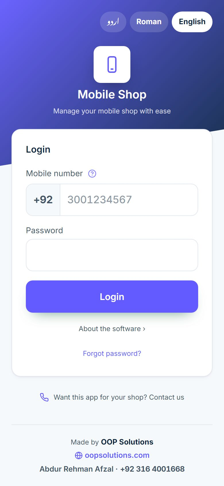
Picture 1: The login page
Log in with your password
At the top, pick your language: اردو, Roman or English.
In Mobile number, +92 is already written. Type the rest of your number without the first 0. For 0300 1234567, type 3001234567.
Type your Password.
Tap Login.
Forgot password
Under the login form, tap Forgot password?
Check that your mobile number is right.
Tap Send code on WhatsApp. A 6-digit code arrives on that number.
Type the code and tap Confirm code.
Choose a New password. You are logged in.
The code works for 10 minutes. If WhatsApp is not available, send a request instead. A staff member's request goes to the shop owner, who sets a new password in More → Staff → the person → New password. The owner's own request goes to the software provider.
Quick PIN
A PIN is faster than a password on your own phone.
Log in once with your password.
Tap More → Set quick PIN.
Type your password, then a 4 to 6 digit PIN, for example 4821.
Tap Save.
Next time this phone opens the Enter your PIN screen with your name. Tap the digits and you are in.
Forgot PIN? Use password takes you back to the password screen.
Use another account lets a different staff member log in on the same phone.
Fingerprint login
Log in once with your password.
Tap More → Fingerprint login → Turn on for this phone.
Touch the fingerprint sensor.
Next time the login page shows Log in with fingerprint. One touch and you are in. On a laptop it can use the face or Windows Hello of that device. Your fingerprint never leaves the phone.
The owner can always use it. Staff can use it only after the owner switches on, in Settings, that staff may log in with their fingerprint.
The same card lists every phone that can log in this way. Remove stops one at once.
Logout
Tap your Profile button (your initials, top right) and then Logout. Logout is also at the bottom of More. Always log out on a phone that other people use.
4. The home screen, the More menu and the "?" help
The home screen
After logging in you see the home screen. Everything you do most often starts here.
Picture 2: The home screen
From top to bottom:
Part
What it does
Header
The shop's name, then English (language), Messages, More and your Profile button (your initials).
Greeting
"Good morning", "Good afternoon" or "Good evening" with your name, and Here is your shop today.
Search box
Type an IMEI, a phone model or a person's name and tap Search. Scan reads a barcode with the camera.
Sell
Sell a phone, cash or udhaar (chapter 8).
Add stock
You bought a new or used phone (chapter 6).
Other jobs
Udhaar, Stock, Repair, Return, Invoices and Expense.
At a glance
Pick Today, Yesterday, Week, This month or From – to. Cards show Sales (and phones sold), Profit, Cash & bank, I will get, I have to give, Phones in stock, Expenses and a Last 7 days chart. Tap See all for the full hisaab.
Needs attention
Things waiting for you, for example "2 phones: ID card check pending" or "1 repair jobs open". Tap a line to go straight there.
At the bottom is a bar with Home, Stock, Udhaar, Hisaab and More. It is on every screen, so you can always get back.
The Profile menu
Tap your Profile button at the top right (it shows your initials). A small menu opens with your name, mobile number, role (for example Owner) and the shop you are working in. Under it:
My profile: opens More, with your language, quick PIN and fingerprint login.
Shop settings (owner only).
Appearance: how the app looks (chapter 5).
Dark / Light (on a phone): switch the screen colour in one tap. On a laptop this button is in the header.
Logout.
Tap outside the menu, or press Esc on a computer, to close it.
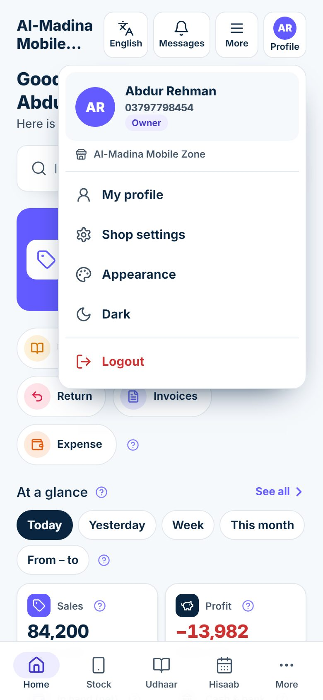
Picture 3: The Profile menu
Scanning from anywhere
If you have a USB or Bluetooth barcode scanner, plug it in. No setup is needed. Scan a phone's sticker on the home screen and its page opens. Scan an unknown code and the app offers to add it. The scanner works even when the phone's keyboard is in Urdu.
The More menu
Tap More (top right, or at the bottom) to see every part of the app, sorted into groups.
At the bottom: Language, Appearance, Set quick PIN, fingerprint login and Logout.
You will only see what your role allows. A salesman, for example, does not see Reports.
The "?" help on every field and card
Shopkeepers told us that some words in software are hard to follow. So every screen title, every tab, every card and every field has a small ? next to it.
Tap the ? next to anything you do not understand.
A sheet opens from the bottom with the title What is this?
It shows the name of the thing, one or two plain sentences about what it is, and an Example box with a real shop case in rupees.
Tap Close to go back. Nothing on the screen changes.
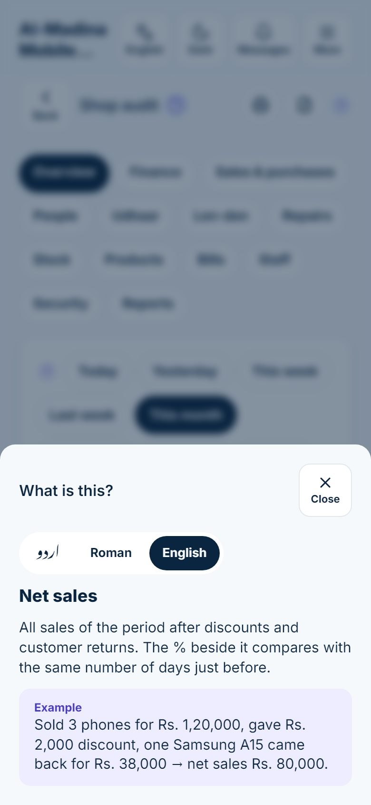
Picture 5: The "?" help sheet with its own language switch
The help sheet has its own language switch at the top: اردو, Roman and English. It changes only the explanation, not the app. So a salesman can keep the app in English and read the help in Urdu, or the other way round. The app remembers his last pick.
Example: You are looking at the shop audit and do not know what Net sales means. Tap its ?. It says: all sales of the period after discounts and customer returns. The example: Sold 3 phones for Rs. 1,20,000, gave Rs. 2,000 discount, one Samsung A15 came back for Rs. 38,000, so net sales are Rs. 80,000.
5. Language, theme and look
Language
The app shows one language at a time. Urdu mode is all Urdu, written right to left. English mode is all English. Numbers are always written 0 to 9, in every language.
Tap the language button in the header (it shows the current language, for example English).
Pick اردو, Roman Urdu or English.
You can also change it in More → Language. Each person can choose his own language on his own phone.
WhatsApp messages follow the shop's language, which the owner sets in Shop settings. For printed and downloaded papers (receipts, invoices, declarations, job sheets, reports) there is a Document language switch right above the print and share buttons: English or اردو. English is chosen at the start; tap اردو for an Urdu paper. Your choice holds until you close the app.
Appearance (theme, design, colours, text size)
Open Appearance from the Profile menu, from More, or from the button on the dashboard. Every change shows straight away and is kept on this phone or computer only. Each salesman can set his own phone the way he likes; your data never changes.
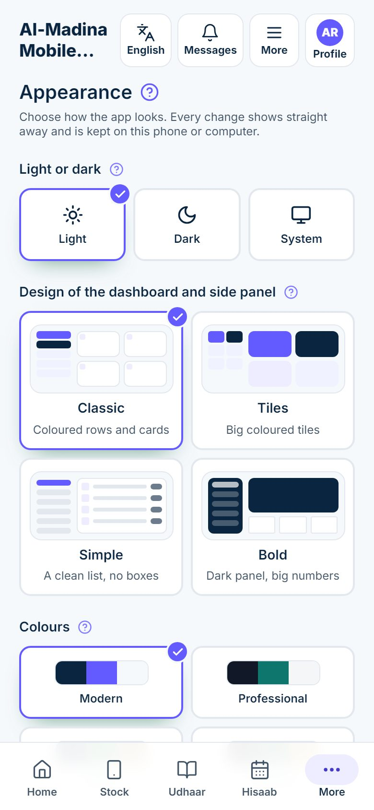
Picture 6: The Appearance page
Part
What it does
Light or dark
Light, Dark, or System (follows the phone's own setting). The Dark / Light item in the Profile menu does the same in one tap.
Design of the dashboard and side panel
Classic (coloured rows and cards, as before), Tiles (big coloured tiles), Simple (a clean list, no boxes) or Bold (dark side panel and big numbers). On a laptop it also changes the side panel.
Colours
The colour set of the whole app: Modern, Professional, Navy or Colorful.
Main colour
The colour of buttons and highlights: Default, Green, Blue, Purple, Red, Orange or Teal.
Text size
Normal, Large or Extra large. Good for older eyes.
Corners
How round buttons and cards are: Default, Round, Soft or Sharp.
Numbers font
The font for amounts: Default, Inter, Manrope or Phone's own.
Back to default
Undo all of the above on this phone.
6. Add stock (buying)
Use Add stock every time a phone, tablet, watch or accessory comes into the shop. It has three steps, shown by the bar at the top: 1 Bought from whom? → 2 Which phone, how much? → 3 Done.
Why it matters: every phone you add gets its own page and its own history from the first day. Later you can see who you bought it from, what you paid, who you sold it to and how much you earned on it.
Step 1: Where is the phone coming from?
On Home, tap Add stock. The first screen asks Where is the phone coming from? and shows two big cards.
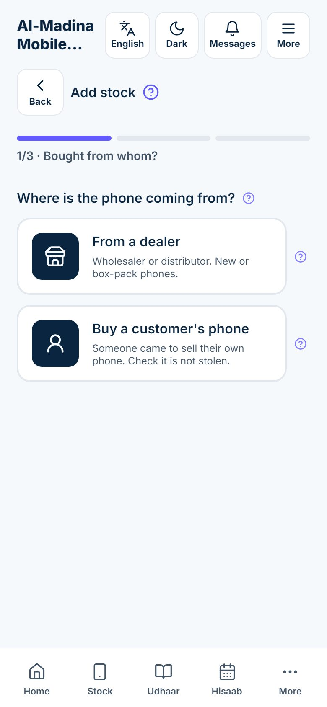
Picture 7: Add stock, step 1: where is the phone coming from?
From a dealer: a wholesaler or distributor. Usually new or box-pack phones.
Buy a customer's phone: someone came to sell his own phone. The app will help you check that it is not stolen.
Buying from a dealer
Example: You buy a box-pack Samsung Galaxy A55 256GB Blue from Rehman Traders for Rs. 92,000 cash. You will sell it for Rs. 1,00,000. The box and cable came with it; the dealer will send the charger in three days.
On Home tap Add stock, then From a dealer.
In Select dealer, type a few letters (Rehman) and tap Rehman Traders. A new dealer? Tap the + button and fill in his name and mobile number.
Tap Next.
Tap Add device. The Add device form opens.
Under What is it? leave Mobile chosen.
In IMEI, type the 15 digits or tap Scan to read the barcode on the box. Under the box the app tells you New IMEI, not seen before or This IMEI has been in your shop before.
For a dual-SIM phone, fill IMEI 2 the same way.
Tap the Brand (Samsung), then the Model (type A55 and tap Galaxy A55).
Choose Storage (256GB) and Colour (Blue).
For an Apple iPhone the form also asks the Region code and the SIM type. The region code is the end of Settings → General → About → Model Number (MLPF3LL/A → tap LL/A). For SIM, tap Physical + eSIM, Dual eSIM (US iPhones from the 14 onwards have no SIM tray), Dual physical SIM or Physical SIM only. Not in the list? Tap New and type it; the app offers it next time. For a used or open-box iPhone it also asks Battery cycle count (iPhone 15 and newer: Settings → General → About; leave empty on older ones). These show on the stock list and the price sticker.
Condition: tap Box pack. The other choices are Open box, Used and Patched (patched asks for Patch details).
PTA status: tap PTA approved. For Non-PTA and JV the app also asks SIM time (months).
Cost price: type 92000, what you paid.
Asking price (optional): type 100000, what you want to sell it for. Not decided yet? Leave it empty and set it later from the phone's page (Change price).
For an Open box, Used or Patched phone the form also asks Battery health % (iPhone: Settings → Battery → Battery Health). Leave it empty if the phone does not show it.
Warranty (months): a dealer phone usually starts at 12.
What came with the phone? For Box, Charger, Cable, Earphones and AirPods choose No, Got it or Later. Here: Box Got it, Cable Got it, Charger Later, and pick the date in When will they give it?
Tap Add. The phone appears in the list. Tap Add device again for the next phone.
Forgot something, like the colour? Tap Edit on that phone in the list, change it and tap Save. Back (or the phone's own back button) takes you to the first step with everything still filled in; Next brings you back to your phones.
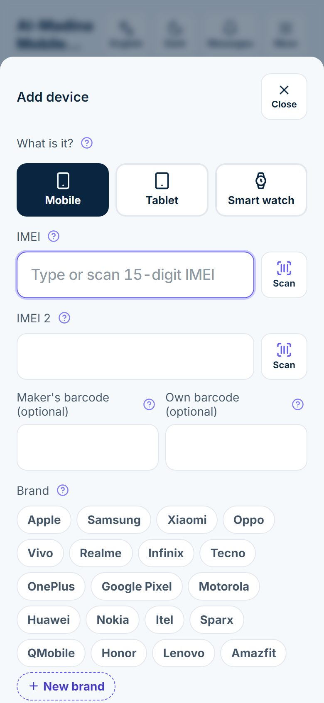
Picture 8: The Add device form
When all the phones are in the list, finish the payment part on the same screen:
How did you pay? Tap Cash (or another way, see below).
When was it bought? Leave Just now, or tap Earlier and pick the date and time if you are entering yesterday's purchase.
Tap Discount, bill no. if you need the extra boxes (see "Reference / slip no." below).
Check the Total: Rs. 92,000.
Tap Put in stock.
You see Purchase saved, the amount and the purchase number, for example PUR-000001. From here you can also tap Print stickers for these phones to print price stickers with a barcode.
Rate suggestion while buying
Once you pick the model, a green box under Asking price shows your own history for that model: when you last sold one and for how much, how many you sold in six months and at what range, and how many are in stock now. Tap Use … to take the suggested price. It reads only your own shop's sales.
How was it paid?
Under How did you pay? tap one big button.
Button
When to use it
What it asks
Cash
Money from the galla
Nothing more
Online
Bank app, IBFT, Raast, Easypaisa, JazzCash, SadaPay
Which bank or wallet (or Other bank / wallet), and a transaction ID if you want
Cheque
You gave a cheque
The bank, the cheque number and the cheque date
Udhaar
You will pay later
What you paid now, if anything
Each way keeps its own account, so the day's hisaab shows how much went out in cash and how much from the bank. If you made accounts in More → Cash & bank (for example "Meezan Bank" or "Shop Easypaisa"), you can pick the exact account.
Paying on udhaar
Example: You buy 3 phones from Rehman Traders for Rs. 2,40,000. You pay Rs. 1,50,000 now and the rest next week.
Add the phones as above.
Under How did you pay? tap Udhaar.
In Paid now (if any) type 150000.
Still to give shows 90,000. This goes into Rehman Traders' khata under I have to give.
If he agreed a date, fill We pay the supplier by (optional). After that date the audit shows this udhaar as overdue.
Tap Put in stock.
Later, when you pay him, use Udhaar → Money paid and pick Rehman Traders.
Reference / slip no. and the dealer's bill number
Tap Discount, bill no. on a dealer purchase to see these optional boxes:
Discount: money the dealer took off the whole bill.
Reference / slip no.: any number or word that helps you find this purchase later, such as the dealer's slip or lot number, for example Slip 4471 or Hall Road lot 3. It is only kept for searching.
Supplier bill no.: the number printed on the dealer's own bill, for example RT-2026-118, so you can match it with his paper if there is ever a question.
Freight / loading (Rs.) and Freight note: transport or loading charges. They are spread over the lines and added to the item cost, so your profit stays true.
A brand, model, storage or colour is missing
If you cannot find it in the Add device form:
Tap + New brand, + New model, + New size or + New colour.
Type the name, for example brand Dcode, model Bold 3.
Tap Save. It is chosen at once and will be in the list next time.
You can rename or delete your own entries later in More → Brands & models. Built-in ones, and ones already used on a phone, cannot be deleted.
Buying a customer's phone
Example:Ali Raza walks in to sell his used Infinix Hot 40 128GB. You agree Rs. 28,000. You pay Rs. 20,000 now and Rs. 8,000 tomorrow. You will sell it for Rs. 34,000.
Add stock → Buy a customer's phone.
Under Who is selling the phone? search for the person by name, phone or CNIC. If he is new, tap + (New person).
Fill Name (Ali Raza) and Mobile number (+92 is fixed; type 3005550606).
Fill CNIC: type the 13 digits 3740512345673 and it shows as 37405-1234567-3. Or tap Scan CNIC (photo of the front) to have the app read it (see chapter 7).
Tap Save, then Next.
Tap Add device and fill in the IMEI, Infinix, Hot 40, 128GB, condition Used, Cost price28000, Asking price34000. Tap Add.
Under How did you pay? tap Udhaar and type 20000 in Paid now (if any). Still to give shows 8,000, which goes into Ali Raza's khata.
Under ID card check choose Check now / later (the normal choice) or Skip, I know this person.
Tap Put in stock.
The done screen says Check the phone is not stolen, with Check ID card now, Skip, I know this person and Print declaration. Go to chapter 7 for the check.
Tablets and smart watches
Tablets and smart watches are tracked one by one, just like phones, each with its own page and history.
In Add device, under What is it?, tap Tablet or Smart watch instead of Mobile.
Only brands that make that kind are shown, for example Apple, Samsung and Lenovo for tablets, or Apple, Samsung, Huawei and Amazfit for watches.
Fill in the questions for that kind (see the table below) and tap Add.
Mobile
Tablet
Smart watch
SIM
Always
Wi-Fi only or Wi-Fi + SIM
No SIM (GPS) or With SIM (Cellular)
IMEI
IMEI and IMEI 2
Only with a SIM
Only with a SIM
Serial number
Not needed
Needed without a SIM
Needed without a SIM
PTA
PTA approved, Non-PTA, JV
Only with a SIM, no JV
Only with a SIM, no JV
Size
Storage
Storage
Case size (38 to 49 mm)
Battery health %
For open box, used or patched
For open box or used
For open box or used
What came with it
Box, charger, cable, earphones, AirPods
Box, charger, cable, pen / stylus, keyboard cover
Box, charger, extra strap
Without a SIM there is no IMEI, so the Serial number (on the box, or in Settings → About on the device) is used for searching and shown like an IMEI.
The lock check for used devices
A used tablet or watch can be locked to the old owner's account. If it is, the next buyer cannot use it. So when you buy a used unit, the Lock check (used device) box appears in the form:
iCloud / activation lock (Apple's Find My).
Google / FRP lock (Android asks for the last Google account after a reset).
Samsung / account lock (a maker's own account).
Paired-device lock (a watch still joined to the old owner's phone).
For each one tap Cleared, Still on or N/A, then tick Lock checked and removed.
Tablets and smart watches always need this check. Used mobiles need it when the owner has switched on Lock check also required for used mobiles in the device settings.
A unit with any lock Still on cannot be bought: the app says "A lock is still on — do not buy until it is removed". Ask the seller to remove it in front of you, then mark it Cleared.
Example: A customer brings a used iPad 9th gen Wi-Fi. You open Settings on it and see Find My is still on. Mark iCloud / activation lock as Still on. The app will not let you buy it. The customer signs out of his Apple ID; now you mark Cleared, tick the box and continue.
Accessories in a purchase
Chargers, cables, covers, glass, earphones, power banks and ordinary watches (Casio, Naviforce) are kept by count. There is no IMEI, only how many you have.
In step 2 of Add stock, tap Add accessory / watch.
Search the item by Name or code and tap it. Not in the list? Tap New item (not in the list), write the Name, choose What is it? (Charger, Cable, Watch and so on, or New kind for your own, for example Ring light), type the Selling price (each) and tap Save and add.
Choose how the dealer sold it: Piece, Dozen, Box or Carton.
Type the Qty and the Unit cost (the price of one piece, or of one dozen or box if you chose that).
Finish the purchase as usual and tap Put in stock.
The stock is always kept in pieces. Example: you buy 5 dozen Type-C cables at Rs. 1,200 a dozen. The stock shows 60 pieces at Rs. 100 each, and the line comes to Rs. 6,000.
On a dealer purchase you can also tap + Charger, cover or other item to type a free line (a name, a quantity and a cost) that is not a stock item.
Scanning while buying
Tap Scan next to IMEI to read the box with the camera. The camera looks for the IMEI first, even when the box has several barcodes.
With a USB or Bluetooth scanner, scan the box: the first scan fills IMEI, the next fills IMEI 2, then Maker's barcode (optional).
Own barcode (optional) is for a sticker code you already use. Leave it empty and the app gives the phone its own barcode when you save. That barcode never changes.
Old stock already in the shop
When you start using the app, the phones already on your shelves have no purchase bill and no money to pay. Enter them as old stock.
More → Old stock.
Tap Add device and fill the form as above, with the price you paid as Cost price.
Tap Add. Repeat for every phone.
Tap Save. You see Purchase saved.
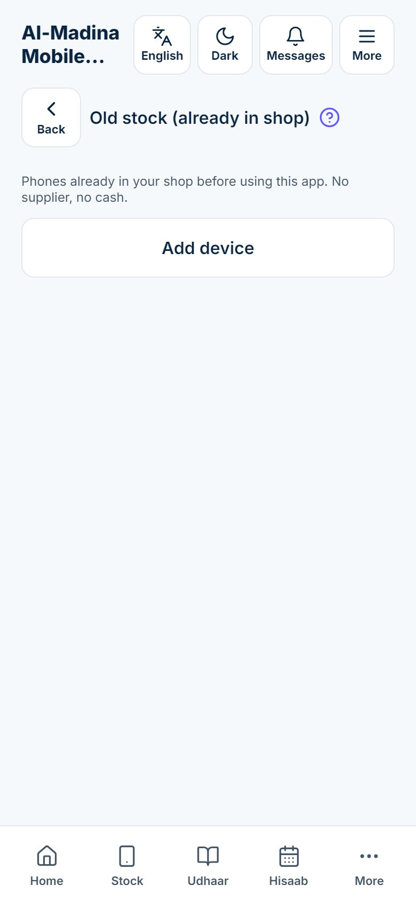
Picture 9: Old stock (already in shop)
No money leaves the galla. Old stock only makes your stock and its worth complete. Example: three old phones at Rs. 30,000, Rs. 45,000 and Rs. 60,000 add Rs. 1,35,000 to your stock worth.
If an old-stock phone was entered by mistake, open it from the stock list and tap Remove old-stock entry, writing why.
7. Checking a used phone (ID check and signed declaration)
Do this for every used phone, tablet or watch you buy from a person. It protects you from buying a stolen phone, and if the police ever ask, you have the seller's identity, photos and signature in one place.
Opening the check
You can open the Verification screen in three ways:
Right after buying: Check ID card now on the done screen.
From the phone's page: ID card check.
From Home: Needs attention → phones: ID card check pending.
Picture 10: The Verification screen
At the top you see the phone, its IMEI and its status chip: ID check pending, ID checked or Stolen? Do not sell.
Step by step
Example: You bought a used Xiaomi Redmi Note 13 from Usman Tariq for Rs. 55,000.
Seller: already filled with the person you bought from. You can change it by searching name, phone or CNIC.
CNIC number: check the 13 digits.
Tap each photo box and take a photo with the camera: CNIC front, CNIC back, Seller photo and Phone photo.
eGadget (Punjab Police): tap Open eGadget portal, check the IMEI there, come back and choose Clear, Flagged or Not checked. Type the Reference no. if the portal gives one.
PTA checked (SMS 8484): tap SMS 8484 to send the IMEI to PTA, then tick the box and pick the PTA result.
Seller signed declaration: the seller signs on the screen (see below).
Physical condition notes (optional), for example small scratch on back, screen original.
Tap Save.
The Result card at the bottom shows the status and a Still missing line that lists exactly what is not done yet, so you never have to guess.
Scan the CNIC instead of typing
Tap Scan CNIC (photo of the front). It is also on the New person form.
Take a clear photo of the front of the card in good light.
After a few seconds the name and CNIC number are filled in, and the photo is kept as the CNIC front. The father's name, date of birth and card expiry go into the notes.
Check every filled field before saving and correct any digit that was misread.
If the card has expired, you see a warning. The Urdu address is not read; type it yourself if you need it.
The seller signs on the screen
The seller confirms, in his own hand, that the phone is his and not stolen.
Scroll to Seller signed declaration.
Hand the phone to the seller. Under Seller signs here (finger or mouse) he signs inside the dotted box with his finger.
Not happy with it? Tap Erase and he signs again.
Tap Use this signature. The declaration is marked signed (Signed by the seller).
Tap Save at the bottom of the screen.
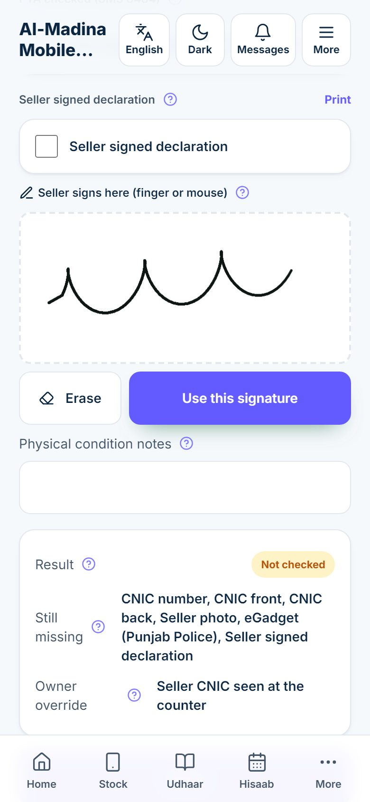
Picture 11: The seller signs on the screen
The signature is saved with the ID check, next to his CNIC photo and the phone's IMEI. To change it later, tap Sign again.
The printed declaration
Tap Print next to Seller signed declaration (or Print the declaration after saving). The declaration prints in the language you pick under Document language (English or Urdu). It shows the shop, the seller's name and CNIC, the phone and its IMEI, the date, and his signature above the line. You can also download it as a PDF or share it on WhatsApp.
After saving
A result screen tells you where you stand:
ID check complete. This phone can be sold. with a Sell this phone now button.
Saved, but the check is not complete yet. Still missing: … The phone stays ID check pending until the rest is done.
Flagged as possibly stolen. Do not sell it; only the owner can override. The phone shows Stolen? Do not sell.
From there you can go Back to the phone, Print the declaration or Change something.
Owner override
Sometimes papers are missing for a good reason, for example a phone bought from a close relative. The owner or manager can fill Owner override with a Reason for override (at least 5 letters), for example Regular customer for 3 years, CNIC seen. The check then counts as complete. The reason and the name of the person who did it stay in the phone's history.
A phone with a pending check
A phone whose check is not done cannot be sold by mistake. At the sale the app says "This phone's ID card check is pending" and Complete sale stays grey until you choose:
Check now: opens the Verification screen.
Skip and sell (I know this person): anyone allowed to sell can do this. Your name is saved in the phone's history and the owner sees it in the audit.
A phone marked Stolen? Do not sell can be sold only by the owner, with a written reason. A tablet or watch with a lock Still on cannot be sold at all until the lock is cleared.
8. Selling
Selling has three steps, shown at the top: 1 Which phone? → 2 How much? → 3 Done. The app works out the totals; you only type the price you agreed.
Step 1: Pick the phone
On Home tap Sell.
Find the phone: type part of the IMEI, the model, the brand or a name in the search box, or tap Scan to read the box or the shop's sticker.
Use the chips All, Mobile, Tablet and Smart watch to narrow the list.
Under Tap the phone you are selling, tap the phone.
Picture 12: Sell, step 1: pick the phone
Each row shows the model, the IMEI (or the serial for a watch), the condition, the PTA chip (for example JV), the check status (ID checked or ID check pending), the asking price and In stock.
A cash sale
Example: You sell a Vivo Y28 128GB for Rs. 36,000 cash, with a 1-month warranty. The charger goes with it now; earphones are promised next week.
Pick the phone. Step 2 opens.
Sold for (Rs) is filled with the asking price. Change it to 36000 if you agreed another price.
Warranty: tap None, 7 days, 1 month, 3 months, 6 months or 1 year. Here: 1 month.
What goes with the phone? For each item tap No, Given or Later. Here: Charger Given, Earphones Later, with a date in When will we give it? Items that came with the phone start as Given.
Need more on the bill? Tap + Another phone, Accessory / watch (a counted item from stock) or + Charger, cover or other item (a free line, no stock change). Discount & customer opens a discount box and an optional customer.
How was it paid? Tap Cash.
Check the Total and tap Complete sale.
The Check before you sell screen shows each phone's sold price against its asking price (and, for the owner and manager, its cost and profit). Tap Confirm and make the bill.
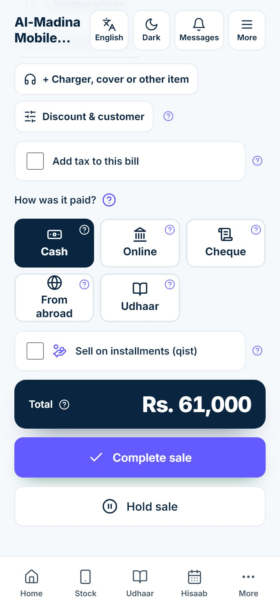
Picture 13: Step 2: what goes with the phone, more lines, and tax
The done screen shows Sale complete, the amount and the bill number, for example INV-000018.
Walk-in customer. Every new sale starts as Walk-in customer: someone who pays in full now and needs no khata. The bill prints "Walk-in customer". To put the bill on a person's khata, tap Choose customer and pick them (or add a new person).
An udhaar sale
Example:Imran Ali takes a Redmi Note 13 for Rs. 58,000. He pays Rs. 20,000 now and promises the rest by the 30th.
Pick the phone and check the price.
Under How was it paid? tap Udhaar.
Who is taking it on udhaar? Search Imran and tap Imran Ali, or tap + for a new person.
Paid now (if any): type 20000. Remaining udhaar shows 38,000.
Promised to pay by (optional): pick the 30th. From the 31st the audit shows this udhaar as overdue.
Tap Complete sale, then Confirm and make the bill.
Imran Ali now appears in Udhaar → I will get with Rs. 38,000. When he pays, use Udhaar → Money received.
Payment methods
Under How was it paid? tap one big button:
Button
When
What it asks
Cash
Money in hand
Nothing more
Online
Bank app, IBFT, Raast, Easypaisa, JazzCash, SadaPay
Which bank or wallet (or Other bank / wallet), and the transaction ID if you want
Cheque
The customer gives a cheque
The bank, cheque number and cheque date
From abroad
The buyer's family sends money from another country
The currency, the amount, the rate, the sender's name, and optionally Western Union / MoneyGram and the MTCN
Udhaar
Pay later
The customer, and what he pays now
Example (from abroad): Usman's brother in Riyadh sends 500 SAR through Western Union for a phone of Rs. 37,100. Tap From abroad, choose SAR, type 500 and the rate 74.20. The app shows Rs. 37,100. Type the sender's name, tap Western Union and complete the sale. If the money is less than the bill, the rest goes on the customer's udhaar.
The receipt shows how it was paid, for example Online · Meezan Bank · Ref TID778812, and the day's hisaab shows how much came in each way.
Asking price and minimum price
Every phone carries an asking price, set when you bought it. At the sale the asking is filled in as Sold for. It is a target; you type the price you actually agreed.
If you sell below the asking, the Check before you sell screen shows a red line, for example Rs. 2,000 under the asking price.
If the market moved, tick Update asking price, type the New asking price and a Reason, for example New model launched, rate dropped by Rs. 4,000. The change is written in the phone's history with your name.
An accessory can have a minimum price. If you go below it, the line says Below the minimum price — needs the manager.
Who may go below the asking is the owner's choice, in Shop settings → Price rules. For each of Selling under the asking price and Changing the asking price he picks Anyone, Owner / manager or With owner PIN. The owner and manager always may.
Example: Asking is Rs. 65,000. The salesman agrees Rs. 62,000. The shop's rule is With owner PIN. On the check screen an Owner PIN box appears; the owner types his PIN and taps Confirm with PIN. The phone's history shows Rs. 3,000 under asking, the salesman's name and the owner's approval.
Price below the buying price
If Sold for is less than what the shop paid, a red box says the price is below the buying price and this is a loss.
Owner or manager: tap I know - sell at a loss to allow it.
Salesman: the sale is refused. He must raise the price or call the owner.
Example: Bought for Rs. 50,000, typed Rs. 47,000. That is a loss of Rs. 3,000; only the owner or manager can confirm it.
Rate suggestion
Under Sold for, a green box shows your own rate for this phone, for example Last sold Rs. 57,500 on 12-10-2026, how many days it took to sell, how many you sold in six months and the range, and how many are in stock now. Tap Use … to take the suggested price, which is the middle of your recent sales rounded to the hundred. The owner and manager also see Usually bought at Rs. ….
Tax and item GST
Tax is off on every sale unless you add it.
Tick Add tax to this bill.
A Tax % box appears, starting at the shop's rate (usually 18).
The tax is added on top of the bill after discount, and the total shows that it includes tax.
Item GST. An accessory can have its own GST % (optional), set on its page in Accessories. On a taxed bill that item is taxed at its own rate; phones and items without a rate take the bill's rate. The receipt then says Tax (by item). A bill without tax stays without tax.
Example: A bill taxed at 18% has a phone of Rs. 10,000 and two cables of Rs. 500 each with GST 5%. Tax on the phone is Rs. 1,800 and on the cables Rs. 50. The bill's tax is Rs. 1,850 and the receipt shows Tax (by item). The screen and the receipt always match to the paisa.
Hold a sale
A customer goes to the ATM to fetch money? Serve the next one first.
Tap Hold sale under Complete sale.
Write a Name to find it (optional), for example Ali ATM, and tap Hold.
The screen is empty for the next customer. Nothing is sold yet and the phone stays in stock.
When Ali comes back, tap Held sales at the top of the sale screen, then Resume.
The bill comes back exactly as it was: prices, tax and payment. A held bill can be resumed from any phone of the shop. If one of its phones was sold meanwhile, it is taken off the bill and the screen tells you.
Receipt: print, PDF and WhatsApp
After Sale complete you can tap:
Print receipt (80mm) for a thermal printer, or Print invoice (A4) for a normal printer.
Download PDF to save the bill as a file.
Share PDF to send it on WhatsApp, Gmail or any app on the phone.
Another sale to start again, or View sale to open the bill.
The same buttons are on every sale's page, which you can open later from Invoices. The page shows the customer, the date, who sold it, every line, the total, what was paid, what is remaining and, for the owner and manager, the profit.
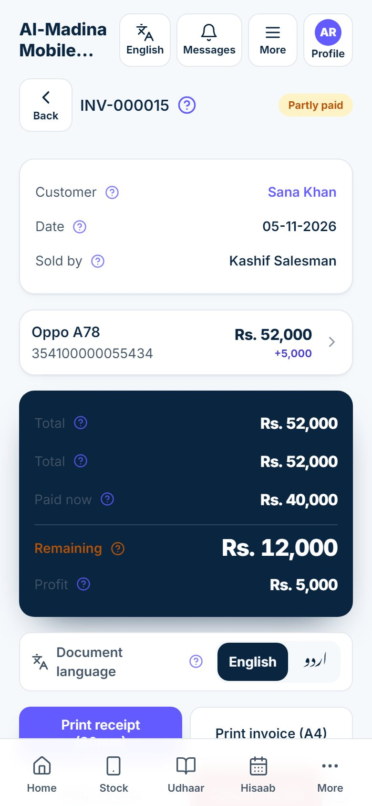
Picture 14: A sale's page with the Document language switch
Right above the print buttons there is Document language with English and اردو. English is chosen at the start; tap اردو to print or share this bill in Urdu.
Tax bills, cash given and change
Every bill now shows, below the total, the amount in words (for example "Rupees Forty-One Thousand Seven Hundred Seventy Only"), the cashier who made it and the time.
Cash given and change. When the customer pays cash, type what they handed over in Cash given by the customer. The screen shows the change to give back, and the printed bill shows Cash given and Change. Leave it empty if you do not need it.
Tax bills. When you tick Add tax to this bill, the printed bill shows Total excl. tax, one line for each tax rate (for example "Tax 18% on 1,500") and Total tax, like an FBR tax invoice.
Phones and sales tax. Mobile phones are in the Ninth Schedule: the importer pays their sales tax, and the shop adds none. Turn on More → Settings → Phones: sales tax paid at import and a taxed bill adds tax only to chargers, covers and other items. The phone line says "Mobile phones — sales tax paid at import (Ninth Schedule)".
Example: phone Rs. 40,000 + charger Rs. 1,500 at 18% → tax Rs. 270, total Rs. 41,770. The customer gives Rs. 42,000 → change Rs. 230.
Extra cash against old udhaar. Sometimes a customer who already owes the shop hands over more than this bill. When a customer is chosen and owes from before, a tick appears under the change: Keep … against their old udhaar (owes …). Tick it and the extra is not given back as change; it is taken against their old udhaar. Their khata goes down, their oldest bills are marked paid, and the printed bill shows it.
Example: Bill Rs. 2,000. Imran gives Rs. 5,000 and owes Rs. 3,000 from last month. Tick the box: change Rs. 0, old udhaar cleared.
The QR code on every bill
Every printed sale bill (80 mm and A4) has a QR code at the bottom with the words Scan to see this bill online. The customer scans it with the phone's camera and sees the bill without logging in: the shop's name, the bill number and date, each item (the IMEI shows only its last 4 digits), the total, what was paid and what is Left to pay, with a Call the shop button. It says Genuine bill from this shop, so a customer, a buyer of the phone later, or a warranty claim can check the bill is real.
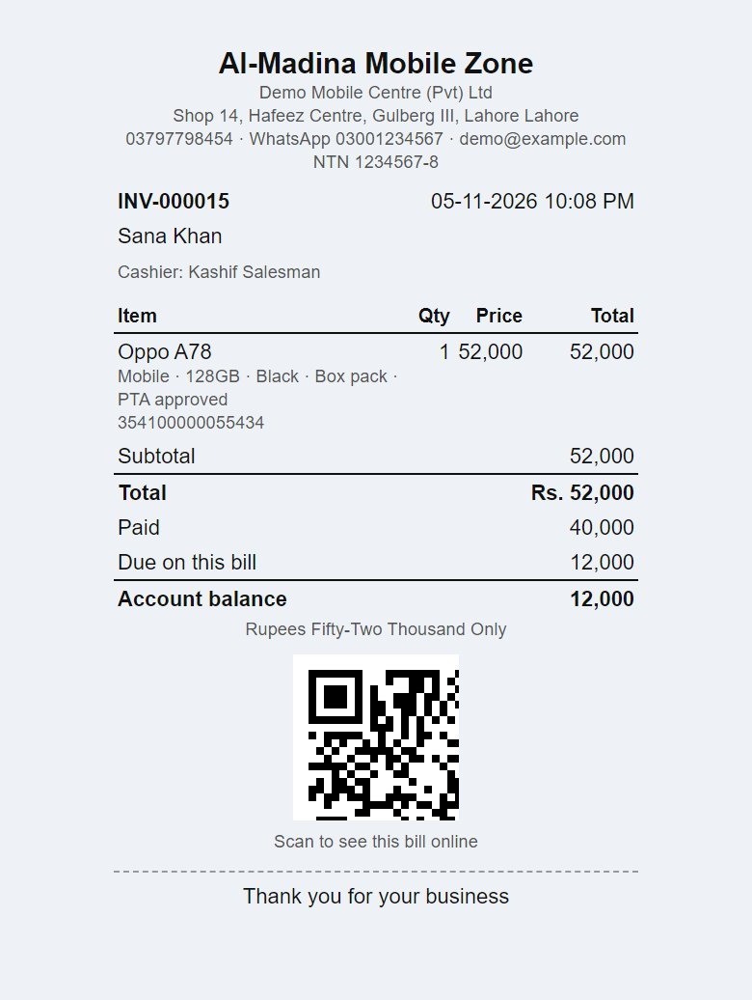
Picture 15: A printed bill with its QR
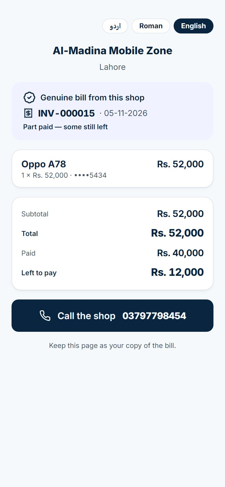
Picture 16: The bill opened from the QR
The page never shows the customer's phone number, CNIC, the buying price or the profit.
If the bill is later returned or cancelled, the page says so.
The link cannot be guessed or changed: a changed link shows "This bill could not be found".
To print bills without the QR, open More → Shop settings → Business profile → Printed bill and untick QR code to see the bill online.
9. Returns
Sometimes a customer brings a phone back: it has a fault, it is not what he wanted, or he simply changed his mind. The Return screen takes the phone back into your stock, works out how much you give back and how much the shop keeps, and writes everything on the record. Nothing is deleted: the original bill stays, and the return is added next to it with its own number (for example RET-000001).
The return works in three short steps: What came back?, How much to give back? and Done.
Before you start
You need the sold phone (or the bill it was sold on). You can find it by IMEI, by the buyer's name or by the buyer's phone number.
If the phone was sold to a walk-in customer with no name, the app will ask Who brought it back? so the money has a person against it.
The shop decides how much to give back. The app never forces a full refund.
Take a phone back, step by step
Example:Usman Tariq bought a Vivo Y17s for Rs. 37,000 cash. Two days later he brings it back because of a speaker fault. You agree to give him Rs. 35,000 and keep Rs. 2,000 for the trouble.
On Home tap Return. You can also open the sold phone's own page and tap Return there.
Step 1/3 · What came back? shows a search box Find the sold phone by IMEI, buyer's name or phone and a list of recently sold phones. Type part of the IMEI (for example 6706) or Usman, or tap Scan and scan the phone's barcode or IMEI.
Tap the Vivo Y17s in the list. You can also pick a whole bill from Or pick from recent sales.
Step 2 shows every line on that bill with a tick box. The phone you tapped is already ticked. If the bill also had a charger or cover that is coming back, tick it too. Lines that were already returned are greyed out and marked Returned.
If the sale had no customer name, choose the person under Who brought it back? (or add a new person).
Customer had paid shows what the customer actually paid for the ticked lines: here 37,000.
Under Give back from tap where the money comes from: Cash (your galla) or one of your bank / wallet accounts. For a known customer there is also Keep in khata: the money is not paid out, it stays in his khata (account) and he can use it against his next purchase.
In Give back to customer (Rs) the full amount is filled in. Change it to 35000. The box Shop cuts shows 2,000 by itself.
In Why? (optional) type the reason, for example speaker fault.
Tap Take it back.
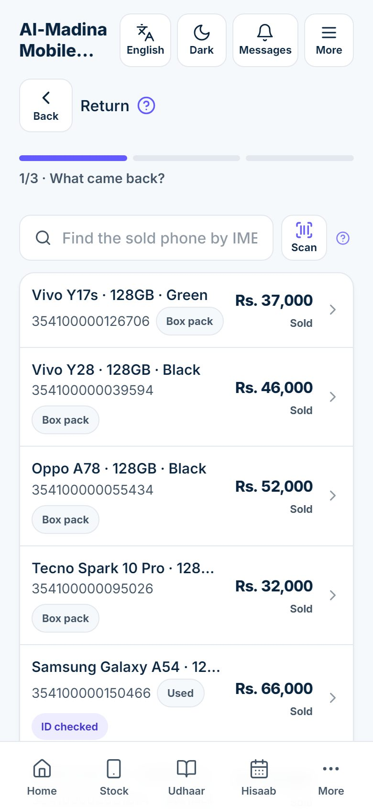
Picture 17: The Return screen: find the sold phone by IMEI, name or phone, or scan it
The last step shows Return done with the amount given back, the amount the shop cut, and the return number. Under it: The phone is back in stock. Tap Another return for the next one, or go Home.
What happens behind the screen
The phone's status goes back to In stock and it can be sold again. Its history gets a Sale returned line with the person, amount and reason.
The Rs. 2,000 the shop kept is counted as income. The day's hisaab shows Given back on returns (Rs. 35,000) and Cut on returns (Rs. 2,000) as separate lines, so the cash count still matches.
The original sale is not erased. On the bill and in reports the returned line is crossed out and marked Returned.
Any charger or cover you ticked goes back into the item's stock count.
Phone sold on udhaar
If the phone was sold on udhaar (credit) and the customer had paid nothing, the app shows Nothing was paid for it; it comes off the udhaar. No cash moves: the amount simply comes off what he owes you.
If he had paid part of it, only the part he paid can be given back; the unpaid part comes off his udhaar.
Example: Bilal bought a phone for Rs. 50,000, paid Rs. 20,000 and owes Rs. 30,000. He returns it. Customer had paid shows 20,000. You give back Rs. 18,000 in cash and the shop cuts Rs. 2,000. His Rs. 30,000 udhaar for this phone is cleared.
10. Exchange
An exchange (also called an upgrade) is when a customer gives you his old phone and takes a newer one, paying the difference. The Exchange / upgrade screen does both jobs at once: it buys the old phone into your stock and sells the new one, and works out the difference for you.
It has four steps: Customer, the old phone, the new phone, and Settle.
Do an exchange, step by step
Example:Bilal Ahmed brings his old Oppo A17. You value it at Rs. 18,000. He takes an Infinix Note 40 priced at Rs. 54,000. The difference is Rs. 36,000. He pays Rs. 30,000 now, and Rs. 6,000 goes on his khata.
Go to More → Exchange (old for new). The screen is titled Exchange / upgrade.
Step 1/4 · Customer: under Select customer search by name, phone or CNIC, and tap Bilal Ahmed. If he is new, tap the + button and add him. Each name shows his current balance, for example I will get (he owes you) or I have to give (you owe him). Tap Next.
Tap Add the old phone. Fill it in just like buying a phone: IMEI 358812091717195, brand Oppo, model A17, storage, colour, condition and PTA status. In Cost price type 18000: this is the trade-in value. Put an Asking price if you already know what you will sell it for, for example 22000. Tap Add, then Next.
The old phone now shows as a card with its trade-in value. If you made a mistake, tap Change the old phone.
Pick the new phone from stock: tap the Infinix Note 40. Check the Sale price (54000) and tap Next.
Settle shows both phones, then New device 54,000, Trade-in value minus 18,000 (and Previous balance if he already owed you something), and a coloured card that says in words: Customer pays the difference Rs. 36,000.
Type Paid now: 30000. Under it the app reminds you: Less than that: the rest goes on their khata.New balance shows his whole khata after this exchange: if he owed nothing before, it shows 6,000.
Tap Complete exchange.
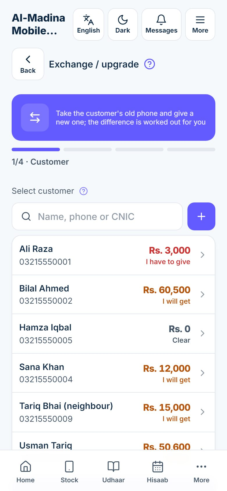
Picture 18: Exchange / upgrade, step 1: choose the customer
The screen shows Exchange complete with buttons to print the receipt (80mm thermal or A4), download or share it, Open the bill, or start Another exchange.
When the old phone is worth more
Sometimes the customer's phone is worth more than the one he takes. Then the card says You give back the difference, and the summary shows Refund to customer. If the two are equal it says Nothing to pay either way.
After the exchange
The old phone is now in your stock, bought from Bilal at Rs. 18,000. It has its own page and history like any purchase.
Because the old phone came from a customer, do its ID card check (CNIC, declaration and so on) exactly as you would for any used phone you buy. For used tablets and watches, do the lock check too.
The new phone is sold on a normal bill. Profit, the day's hisaab and Bilal's khata are all updated in one go.
11. Stock, IMEI check and phone history
Everything you own sits in Stock. From here you can see what your stock is worth, find any phone in seconds, check whether an IMEI has been in your shop before, and open a phone's full life story from the day it came in.
What is my stock worth?
Tap Stock on the bottom bar. The first screen is What is my stock worth?
At the top: how many phones you have and their total value (shown in lakh when it is large).
Below: one row per brand, with how many phones and their value. Tap a brand to see its models.
See all phones opens the full stock list. Download gives you the same figures as a file.
The value is at cost for the owner and manager. Staff who are not allowed to see buying prices see it at the asking price instead.
The stock list
Open it with See all phones, or More → Stock list.
At the top are five buttons: Download, Share, Stickers, Check IMEI and Add stock. Under them:
Search: type an IMEI, model, brand, or the name or phone number of the person you bought it from or sold it to. Tap Scan to use the camera, or simply scan with a USB scanner.
Brand circles: All, then one circle per brand with its count (for example Apple · 2, Samsung · 2). Tap one to see only that brand.
Status chips: In stock, On loan, Sold, Faulty and All.
Filters: opens more choices: Grade (Used A, Used B, Refurbished, Copy / China), RAM (GB), a price range (lowest and highest asking price), and a switch Lock not checked that shows only used devices whose lock check was never done.
Cards / Table / Grid / List: how the phones are shown. Cards are the big cards described below. Table is like Excel: one row per phone and a column for each detail (memory, colour, condition, PTA, battery, IMEI, days, cost for the owner and manager, asking price, status). Tap a column heading to sort by it, and tap it again to reverse the order. The last row adds up cost and asking price; on a phone, slide the table sideways. Grid shows small tiles, many on one screen. List gives one short line per phone. The app remembers your choice on that phone or computer.
Under the filters the app shows how many phones match, for example 7 phones. Each phone is a card with its name, colour and storage, the asking price, and four small boxes: Memory, PTA, Condition and Days (how many days it has been in the shop). At the bottom are the IMEI, the ID check badge and a Sell button.
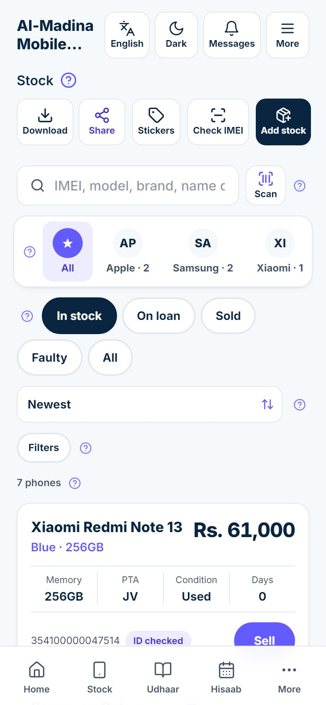
Picture 19: The stock list with search, brand circles, status chips and filters
Tablets and smart watches in the stock list
Tablets and smart watches live in the same stock as phones. Their cards show what matters for that type: a watch shows its case size and GPS or SIM; a tablet shows Wi-Fi or SIM. A device without a SIM has no IMEI, so its Serial number is shown and searched instead.
To see only one type when selling, use the chips All · Mobile · Tablet · Smart watch above the stock on the sale screen.
For a count and value by type, go to Reports → By type (Stock by type): units, value at cost and at asking price, how many are used, how many have the lock not checked or still on, how many are Non-PTA / JV, and how many are older than 60 days.
If a device was entered as the wrong type (a tablet saved as a mobile, for example), the owner can tick it in the stock list and use Change type. History, IMEI or serial, barcode and balances stay exactly the same; only the type changes, and the change is written in the history.
Check an IMEI ("has this phone been here before?")
Before you buy a used phone, it is worth checking whether it has passed through your shop before.
In the stock list tap Check IMEI (or More → IMEI search).
Type the 15 digits, or tap Scan and point the camera at the IMEI barcode on the box. You can also dial *#06# on the phone and scan the screen.
The answer is one of these:
What you see
What it means
New IMEI, not seen before
This phone has never been in your shop.
This IMEI has been in your shop before · Bought 1 time(s)
You have bought this phone before. Tap it to open its full history: who sold it to you, who you sold it to, and so on.
IMEI check digit is wrong, re-check
The number is mistyped. Every real IMEI has a last "check digit"; this one does not match.
A phone's own page
Tap any phone in the stock list to open its page. The dark card at the top shows:
the IMEI (or serial) and the status, for example In stock, On loan, Sold, In repair or Faulty;
Barcode (for example MS000006), storage and colour;
badges for condition (Used, Box pack...), PTA (PTA approved, Non-PTA, JV), the lock check (Lock not checked or Locks cleared) and the ID check (ID checked, ID check pending);
Asking price and, for the owner and manager only, Cost.
Under the card are the two main buttons, Sell and ID card check, and then Actions:
Button
What it does
Give on loan (amanat)
Give this phone to another shop (chapter 15).
Mark faulty
Take it out of the sellable stock until it is fixed.
Send to repair
Open a repair job for your own phone (chapter 14).
Print sticker
Print its price sticker with barcode (chapter 12).
Change asking price
Set a new asking price; the old one stays in the history.
Add note
Write anything you want to remember, with your name and the time.
Edit details
Correct storage, colour and similar details.
Lock check
Record the iCloud / Google (FRP) / account lock checks for a used device.
Return
Shown on a sold phone: start a return (chapter 9).
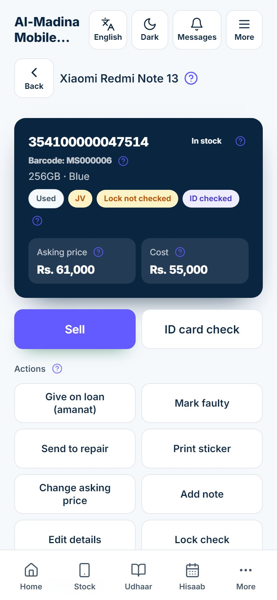
Picture 20: A phone's own page: IMEI, barcode, badges, asking price and cost, and the action buttons
Money on this phone
Further down the page is the card Money on this phone. It answers "what did this phone cost, what did it sell for, and is anything still pending?"
Cost, Still to pay, Sold for, Still to get and Margin in one row.
Bought from: who sold it to you, the purchase bill, the agreed price, what you paid at the time, every later payment, and what is still to pay.
Sold to: the same for the sale: agreed price, Received at the time, later payments, and what is still to get.
Pay for this phone and Receive for this phone: take a payment that is booked against this very bill, so the phone's figures and the person's khata move together.
Example: you bought a Vivo from Ahmed for Rs. 35,000 and paid Rs. 30,000 (you owe him Rs. 5,000). You sold it to Bilal for Rs. 40,000 and he paid Rs. 35,000 (he owes Rs. 5,000). Later you pay Ahmed Rs. 2,000 and Bilal pays you Rs. 3,000. The card now shows cost 35,000, still to pay 3,000, sold for 40,000, still to get 2,000, margin 5,000. Ahmed's and Bilal's khata pages show exactly the same numbers.
If the phone was entered as old stock, the card says Old stock: entered with its cost, no purchase bill.
The full history
At the bottom of the page is History: one timeline of everything that ever happened to this phone, newest on top. Every line has the date, the person, the amount and the staff member who did it. You will see lines such as:
Purchased (with the bill and who you bought it from) and Barcode assigned;
Verified (the ID check, for example "Seller CNIC seen at the counter");
Price changed (old and new asking price);
Sold with the invoice number (for example INV-000017), Received at the time and left to get;
Sale returned with the return number (for example RET-000001), the refund and the reason;
Loaned out, Loan returned, Sent to repair, Back from repair, Marked faulty, Label printed, Note.
History lines can never be edited or deleted. A mistake is corrected by a new line, so the timeline always tells the true story. Tap Download or Share above the history to send it as a file, for example to a customer who wants proof of where a phone came from.
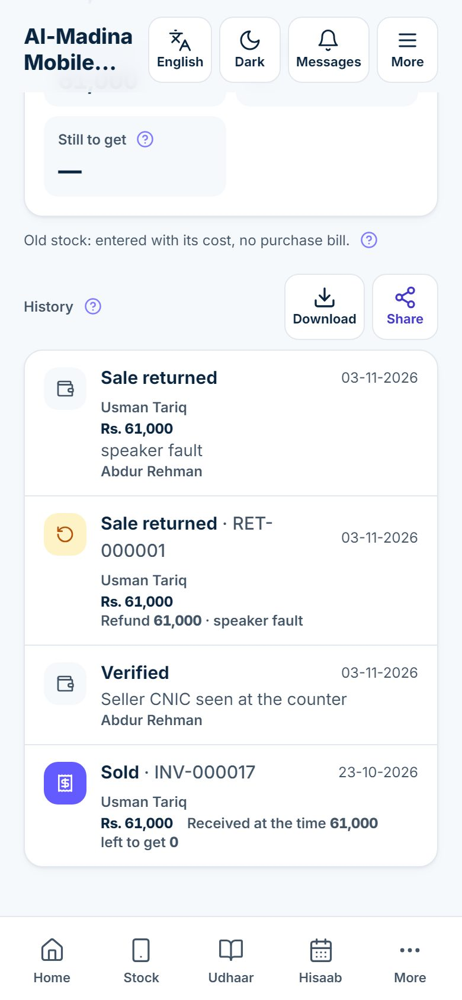
Picture 21: A phone's history: sold, verified, sale returned, each with date, person and amount
Stock count with the scanner
Once a month (or whenever you feel something is missing) count the shelf with the scanner. The app tells you what is missing and what should not be there.
Go to More → Stock count. (Owner and manager.)
Scan every phone and every item on the shelf, one after another. A USB or Bluetooth scanner is fastest, but you can also type a code in Type a code and press Enter. The big number shows how many you have scanned.
Scanning the same box of chargers five times counts five pieces.
When the shelf is done, tap Check against stock.
The result has three lists: Found (scanned and in stock), Missing (should be in stock but was not scanned) and Should not be here (scanned, but the app says it is sold, on loan, or not known at all). For items you see scanned 8 of 10 and whether it matches or differs.
Tap any phone in the lists to open its page and sort it out. Clear or Start a new count begins again.
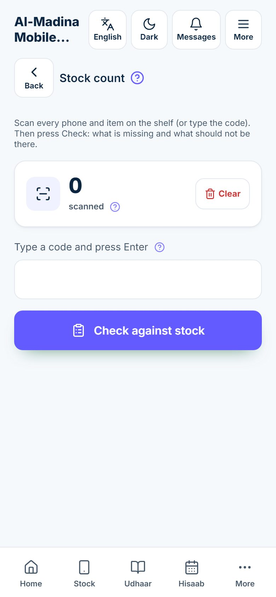
Picture 22: Stock count: scan everything, then Check against stock
Example: the app says 12 phones should be in stock. You scan 11. Missing shows one Samsung A15. You open it and see in its history Loaned out to Star Mobiles yesterday, but it was never marked. Or it really is missing, and now you know which one.
Sending stock to another branch
If you have more than one branch, you can move phones and items between them. Nothing is sold: the stock leaves this shop at its buying price and arrives in the branch at the same price, so profit does not change.
Open the phone and tap Send to another branch (or open an item and tap the same button, or go to More → Branch transfers → Send to a branch).
Under Send to, tap the branch.
Tap Add a phone to add more phones (search or scan the IMEI or barcode), and Add an item for chargers, covers and other items. Use + and − to set how many pieces go.
Check Stock value moving (at cost) at the bottom, then tap Send now.
Example: Saddar sends a Galaxy A04 (bought for Rs. 40,000) and 2 chargers (Rs. 900 each) to Mall Road. Saddar's stock goes down by Rs. 41,800 and Mall Road's goes up by Rs. 41,800.
In this shop the phone shows Sent to a branch; its whole history stays here.
In the branch it is in stock with the same IMEI, barcode and selling price, and its first line says it came from your other branch.
More → Branch transfers lists everything sent and received, with a number like TRF-000001.
12. Price stickers, barcodes and scanning
Every phone and every item in Mobile Shop gets its own barcode the moment it is bought. You print it on a small price sticker, stick it on the box, and from then on one scan finds the phone: at the counter, in a return, in a stock count. No more typing 15-digit IMEIs.
How barcodes are given
When you add stock, each phone gets a barcode like MS000006 (your shop's prefix plus a number). Items such as chargers get one barcode per item, not one per piece.
The barcode never changes and is never given to anything else. If you sell a phone and later buy it back, it keeps its old barcode.
The barcode shows on the phone's page under the IMEI (Barcode: MS000006) and on each item's row.
A box that already has the maker's barcode can use it too: when buying, scan it into Maker's barcode (optional). You can also type your own code in Own barcode (optional).
Print a price sticker
You can print stickers from several places:
One phone: open its page and tap Print sticker.
Many phones: in the stock list tap Stickers, tick the phones (or Select all), then tap Stickers (n).
Right after buying: the purchase result has Print stickers for these phones (and Print item labels for items).
An item: open the item's page and tap Print sticker. Use copies for a whole box of chargers.
The sticker sheet then asks a few things once:
Sticker size: roll sizes such as 38×25, 40×30, 50×25, 50×30, 58×40, 60×40 and 70×40 mm for label printers, A4 sheet (65 per page) for an ordinary printer, or Custom mm with your own Width (mm) and Height (mm).
What goes on it: tap a line to switch it on or off: Shop name, Model, storage and colour, Price, Barcode, IMEI number, IMEI last 4, Condition, PTA, Date and Cost code.
Copies of each: how many stickers per phone or item.
Tap Print. The page is already exactly the size of one sticker, so a label printer prints one per sticker. You can also download or share it as a PDF.
Tick Remember these choices and the shop will use the same size and lines next time.
Example: you want a clean sticker for the front of a box. Choose 50×30 and switch on only Shop name, Model, storage and colour, Price and Barcode. The sticker reads AL-MADINA MOBILE ZONE · Xiaomi Redmi Note 13 · 256GB · Blue · Rs. 61,000 with the barcode MS000006 under it.
Picture 23: A printed price sticker: shop name, model, storage and colour, price, and the barcode
The cost code (owner's secret)
Some shops like to see the buying price on the sticker, but in letters a customer cannot read. Set it in Shop settings → Sticker cost code: type a word with 10 different letters, for example BLACKHORSE. Digit 0 is the 1st letter, 1 the 2nd, and so on. A phone that cost Rs. 45,000 then prints as KHBBB.
Barcode settings (owner)
More → Settings → Barcode settings is where the owner sets up barcodes. Most shops never need to change anything here.
Barcode type for new labels: Code 128 (reads on every scanner, the default), EAN-13 (digits only) or QR (for 2-D scanners and phone cameras). Old labels keep working when you change it.
Shop prefix and Start numbering from: the letters and number new barcodes start with.
Value: Prefix + number (MS000123) or The phone's IMEI.
Test print and Test scan: print a test sticker, then scan it into the Scan here box. It should show the phone or item it belongs to.
Barcodes for old stock: if you used the app before barcodes came, tap this once to give every old phone and item a barcode. Then print their stickers from the stock list.
Scanning with a USB or Bluetooth scanner
Any ordinary barcode scanner works. Plug it into the computer's USB port (or pair the Bluetooth one). No driver or setup is needed.
The scanner must type the code and press Enter by itself. Test it once in Notepad: scan a barcode and the code should appear, followed by a new line. If it does not, scan the "add Enter / CR suffix" code in your scanner's little manual.
You do not need to click in a box first. Just scan, wherever you are in the app. It even works when the Urdu keyboard is switched on.
Scanning with the phone camera
On a phone, tap any Scan button (next to the search boxes, and in the IMEI boxes when buying). The camera opens: point it at the barcode and hold steady in good light. If the camera does not open, tap Take a photo instead and take a picture of the barcode.
For an IMEI, point at the IMEI barcode on the box, or dial *#06# on the phone and scan the screen. If IMEI 1 is already filled, the app asks you to point at the IMEI 2 barcode.
What a scan opens
The app understands its own barcodes, IMEI 1, IMEI 2, item codes and maker's barcodes. What happens depends on where you are:
Where you are
What a scan does
Home, or most screens
Opens the phone's or item's page. A sold phone opens its history.
The sale screen
Puts the phone on the bill at its asking price. Scanning an item adds 1; scan it again and the quantity becomes 2.
The return screen
Finds the sold phone and goes straight to its bill.
Buying stock
Fills IMEI 1, then IMEI 2, then the maker's barcode.
Stock count
Counts the phone or piece.
A repair sticker, anywhere
Opens that repair job (the REP- number, chapter 14).
If the code is not known, the app beeps and shows Item not found with an Add it button.
13. Accessories and items
Chargers, cables, covers, glass protectors, earphones, power banks, ordinary watches and similar things are kept by count: no IMEI, just how many you have. The app calls them items. You find them in More → Accessories, on a screen called Chargers, covers etc.
The screen has three tabs: In stock, Low stock and Pending accessories. Above the list are a search box (Name or code) with Scan, a Filters button (category, brand, quality, supplier, shelf, out of stock) and Item reports. Each row shows the item's name, its quality (for example Original), its code (for example BASEUSTY-001), category, brand, colour, shelf (Rack A2), how many are left and the sale price. A red Low stock badge appears when it is running out.
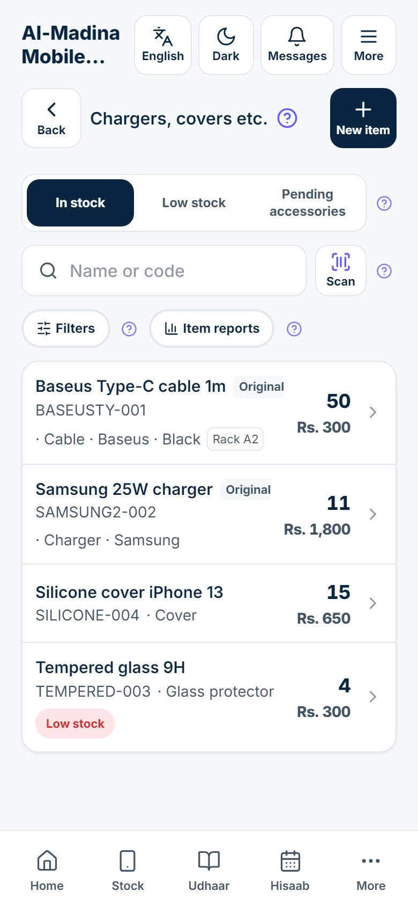
Picture 24: Chargers, covers etc.: items with count, price, shelf and the low-stock badge
A few simple rules
The count is always in pieces. You may buy in dozens, boxes or cartons, but stock is kept in pieces.
The sale price is the price of one piece to an ordinary customer.
Every purchase is kept as its own batch with its date, supplier, quantity and cost. When you sell, the oldest batch is used up first.
Nothing on an item is ever deleted. If the count is wrong, you adjust it with a reason, and the adjustment is written in the history.
Add a new item
Example:Baseus Type-C cable 1m, sale price Rs. 300 each, never below Rs. 200, warn when 20 are left.
In Chargers, covers etc. tap New item.
Type the Name: Baseus Type-C cable 1m.
Pick the Category: Cable. The list has charger, cable, cover, glass protector, earphones, power bank, watch, speaker and more, and you can add your own kind.
Type the Sale price: 300.
Type Reorder at: 20. This is your low-stock warning.
If you already have some on the shelf, type Opening qty and Cost each.
Tap More details if you want to fill in more. All of it is optional: Brand, Fits (phone / model) (for example "iPhone 14/15, Samsung A series"), Quality (Original, Company / OEM, A-grade, Copy / China, Used), Colour, Size, Capacity (mAh / GB), Connector, Watts, Wholesale price, Minimum sale price (200), Promo price with its dates, Warranty (days), Shelf / rack, Maximum stock, Supplier codes and Notes / description.
Tap Save. The item gets its own code and barcode straight away.
If a very similar item already exists, the app shows Similar items already in stock, so you do not make the same item twice.
Buying items in pieces, dozens or boxes
Items are usually bought from a dealer, often on the same bill as phones.
Tap Add stock and choose the dealer.
Tap Add accessory / watch.
Pick the item from the list, or tap New item (not in the list), fill in its name, what it is and the selling price each, and tap Save and add.
Tap the unit you bought in: Piece, Dozen, Box or Carton. Type how many and the price you paid for one unit.
The app works out the cost of one piece for you: 3 dozen at Rs. 1,200 a dozen becomes 36 pieces at Rs. 100 each.
If you like, fill in the supplier's bill number and any freight or loading charge. Freight is spread over the lines and added to the cost.
Save the purchase as usual (paid now, the rest on the dealer's khata). On the result screen tap Print item labels if you want stickers.
How many pieces make a dozen, box or carton is set once in Settings → Item settings. A single item can have its own box size (Pieces in one box (this item)).
Batches and average cost
Each purchase is a batch. The item's page lists every batch with the supplier, the date, how many were bought, how many are left, and the cost of one piece.
Example: you bought 3 dozen Baseus cables from Rehman Traders at Rs. 100 a piece, and later 2 dozen more at Rs. 120 a piece. You now have 60 pieces and the Avg cost is Rs. 108. You sell 10 pieces: they come out of the older Rs. 100 batch first, so it shows 26 / 36 left and the newer batch still shows 24 / 24 left.
The owner chooses how stock is valued in Settings → Item settings → Stock valuation: Weighted average (the default) or FIFO (oldest first), where each sale is costed from the batch it actually came out of.
Selling items
In Sell, tap Accessory / watch. The same button appears under a phone, so you can sell a charger or cover with it.
Tap the item, or simply scan its barcode. Scan again to add one more.
The line shows how many are in stock. The price is filled in for you: the retail price for an ordinary customer, the Dealer price if the customer is marked as a dealer, or the Promo price while a promotion is running.
Change the quantity or price if needed, and complete the sale as usual.
The count goes down and the profit is worked out from the cost.
Some guards protect you:
You cannot sell more than you have (More than in stock), unless the owner has switched on Allow selling past zero stock in Item settings.
Selling under the Minimum sale price shows Below the minimum price — needs the manager. It follows the same price rule as selling a phone under its asking price (see chapter 15).
Selling below cost needs the owner.
Pending accessories
Sometimes a charger or earphones are promised but not handed over yet. The Pending accessories tab keeps them so nothing is forgotten:
From vendor: the dealer still owes you something, for example the charger for a Galaxy A55, with the date he promised.
To customer: you promised the customer something, for example earphones with a Vivo Y36.
They come from the questions What came with the phone? (when buying) and What goes with the phone? (when selling), where you answer Later for a thing still to come. When it is handed over, tap Delivered.
Stock alert (low stock)
Every item has a Reorder at level. When the count falls to that level or below:
the item shows a red Low stock badge and appears in the Low stock tab;
Home shows "N items low on stock" under Needs attention, and tapping it opens the Low stock tab;
the owner's night report lists the items that are low.
Item reports → Low stock goes one step further: it groups the low items by their last supplier and suggests how many to order, with an estimated cost, so you can phone the dealer with a ready list. The other item reports show Stock value (at cost and at sale price), Fast / slow movers, Profit by category and by brand, Dead stock (not sold for a number of days) and Suppliers.
Adjust stock (damage, loss, count correction)
The count should only change by buying, selling and returning. When a piece breaks, goes missing, or the shelf count differs, adjust it:
Open the item and tap Adjust stock.
In Change (+/−) type the change, for example -2 for two broken covers.
In Reason (required) write why, for example damaged or count correction. The app will not save without a reason.
Tap Save. The history shows an Adjusted line of −2 with your name, the time and the reason.
The item's page
Tap any item to open its page. It shows:
the details: Sale price, Wholesale price, Minimum sale price, Avg cost, Profit each (with the margin %), Stock value, Reorder at and Shelf / rack;
Purchase batches: each purchase with the supplier, date, pack (for example 3 Dozen), how many are left and the cost;
History: every movement with its date and amount: Bought (from whom, how much, what is still to pay), Sold (to whom, with the invoice number), Returned, Adjusted, Used in repair, and Price change lines for the sale price, minimum price and average cost. On the right of each line you see the change (for example −4) and the count after it.
Buttons on the page: Print sticker for everyone, and for the owner and manager Adjust stock, Edit and Delete at the top (an item you no longer sell; its past bills and history stay).
In our cable example the page shows Avg cost Rs. 108, Profit each Rs. 192 (178%) on a Rs. 300 sale price, and Stock value Rs. 5,400 for the 50 pieces left.
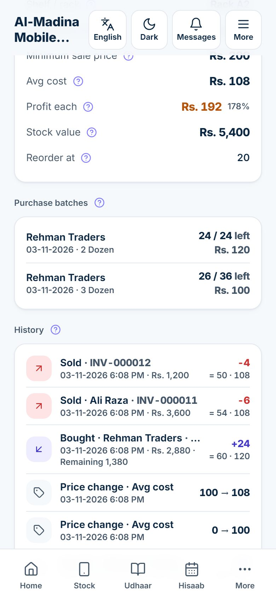
Picture 25: An item's page: average cost, profit each, stock value, purchase batches and history
14. Repairs and repair labs
The repairs module follows a customer's phone from the moment it comes over the counter until it goes back in his hand: what is wrong, what you promised, how much advance he gave, whether it went to an outside lab, what the lab charged, and what he paid at the end.
Every job moves through four stages, shown as a bar on the job: Taken in → Being fixed → Ready → Given back. Each job gets a number such as REP-000004.
The repairs list
Open it from Home → Repair, or More → Repairs. At the top are Take a phone for repair and Repair labs. Under them:
Open shows jobs not yet given back; All shows every job.
The search box finds a job by Job no, IMEI, name or phone.
Each row shows the phone and problem (for example Vivo Y20 — screen lines), the customer, the job number, the ready-by date, the stage (Taken in, Being fixed, Ready) and the amount.
When a phone is at an outside lab, the row says At lab with the lab's name, in red if the lab is late.
When jobs are ready, a line Ready — call the customer reminds you to phone them.
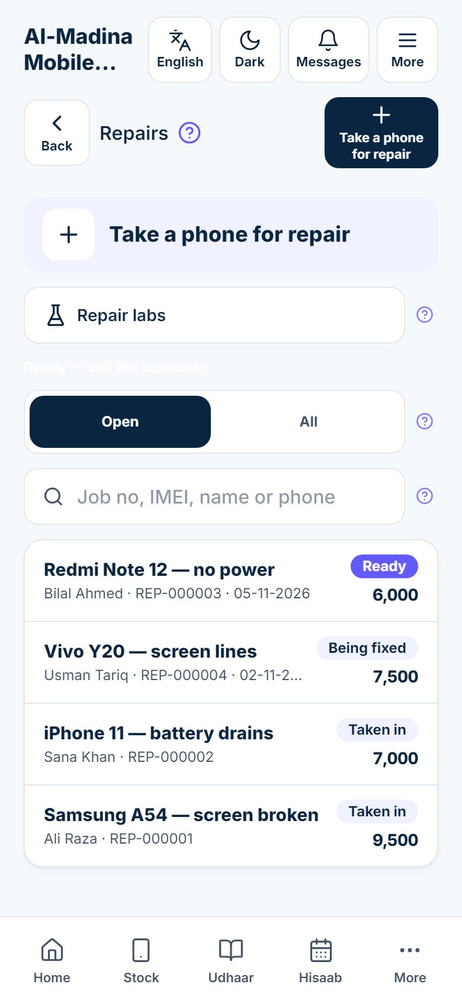
Picture 26: The repairs list: open jobs with stage and amount, and the Repair labs entry
Take a phone in
Example:Usman Tariq brings a Vivo Y20 with lines on the screen. You think the bill will be about Rs. 7,500. He gives Rs. 2,000 advance. You promise it in three days.
Tap Take a phone for repair.
Under Customer search by name, phone or CNIC and tap Usman Tariq. For a new customer tap + and type his name and mobile number.
In Phone name (e.g. Samsung A54) type Vivo Y20.
Under What is the problem? tap the matching problem chips (for example Screen / display). If his problem is not in the list, write it in Other problem (write): screen lines.
Type Likely cost: 7500, and Advance taken: 2000.
Under Ready by tap Today, Tomorrow, 3 days, or choose a date.
Tap IMEI, things left with the phone if you want to note the IMEI and what he left with it: SIM, memory card, cover, charger, box or earphones.
Tap Save and print slip. The customer's slip (the job sheet) prints, and the job opens.
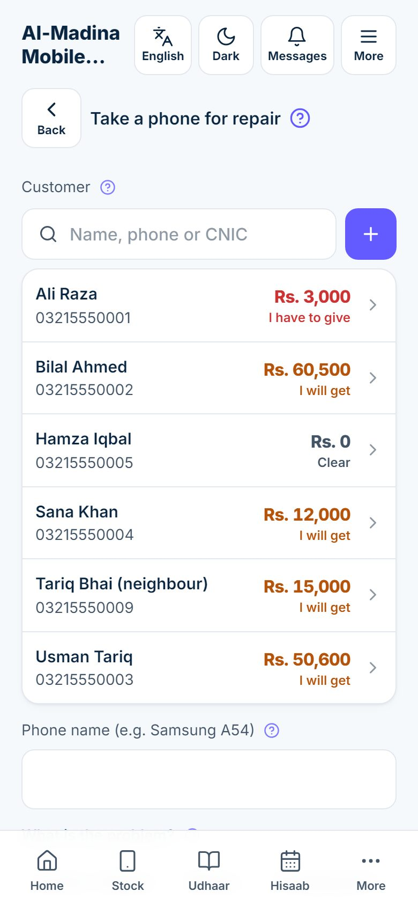
Picture 27: Taking a phone in for repair: choose the customer, then the phone and problem
The advance is taken into your cash and counted against the job. If the customer never comes back for the phone, the record still shows exactly what he paid.
While you work on it
Open the job from the repairs list. Under the stage bar you have:
Start fixing: the job moves to Being fixed.
Waiting for parts: for example, the screen has been ordered from the market.
Could not fix: closes the job without a repair (the phone is given back unrepaired).
It is fixed: opens the bill (see below).
Lower down are Print sticker (the repair sticker), Print slip (the customer's job sheet again), and Document language, which chooses whether the printed slip is in English or Urdu.
Send the phone to an outside lab
In the market, many shops do not fix everything themselves. A board fault or an iPhone screen often goes to a specialist lab or technician. Mobile Shop keeps a full record of every such trip: which lab has the phone, since when, what they must do, what they charged, and what the shop owes them.
Example (continued): your technician cannot fix the Vivo's screen. You give it to Zain Mobile Lab (Hall Road). They quote Rs. 4,000 and promise it back in two days.
On the job tap Send to a lab.
Under Repair lab / technician pick Zain Mobile Lab (Hall Road). A new lab can be added right there with its name and phone.
In What should the lab do write the work, for example change screen.
Type the Lab's quote: 4000. This is only for the record; the real charge is typed when the phone comes back.
Choose Expected back: the day the lab promised.
Tap Send.
The job moves to Being fixed, and a card At the lab now appears on it with the lab's name, a Call button, the date sent, how many days it has been there, the expected day and the quote. If the lab has not returned it by the expected day, the card turns red and says Late: not back by the expected day.
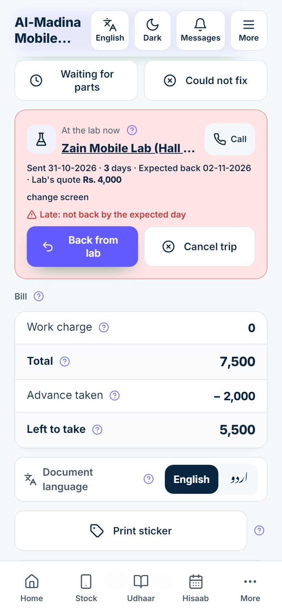
Picture 28: A repair job while the phone is at a lab: late warning, Back from lab and Cancel trip
Only one lab trip can be open per job. If you marked the wrong lab, or the lab never took the phone, tap Cancel trip and write the reason in Why cancel?. The cancelled trip stays in the history.
Bring it back from the lab
When the lab returns the phone, open the job and tap Back from lab.
Answer Did the lab fix it?: Fixed or Not fixed.
Type the Lab's charge for this trip: 4000. Type it even if the lab could not fix it but took a checking fee.
In Paid to the lab now type what you paid in cash on the spot, for example 1500. The app shows Rs. 2,500 goes to the lab's khata (the shop owes it).
Tap Save.
If it was Fixed, the job becomes Ready and the customer gets the usual "your phone is ready" message. If it was Not fixed, the job stays open and you can send it to another lab.
Every trip is listed under Lab trips on the job: which lab, sent and back dates, fixed or not, and the charge. Nothing is ever deleted.
What happens to the lab's charge
On a customer's phone, the lab's charge is a cost of that repair. Your repair profit is the bill minus parts minus lab charges.
On your own stock phone, the lab's charge is added to that phone's cost.
The charge is booked once, when the phone comes back. It is not booked again when you give the phone to the customer.
What you did not pay on the spot sits on the lab's khata. Pay it later from the lab's khata with Money paid, like any other dealer.
Example: a phone goes to Ali Repair Lab, comes back Not fixed with a Rs. 500 checking fee, then goes to Zain Mobile Lab and comes back Fixed for Rs. 4,000. Lab trips shows both. The repair's lab cost is Rs. 4,500.
When it is fixed
Open the job and tap It is fixed. The sheet Parts and work charge opens.
Add the parts you used with + Part (name, quantity, price). Tap one of the items from your stock under it to use it From stock: its count goes down by itself.
Type the Work charge. The Total is worked out as you type.
Tap It is fixed. The job shows Ready and the bill: total, minus Advance taken, equals Left to take.
Tap Call to phone the customer.
Example (continued): the bill for the Vivo is Rs. 7,500 work charge. Advance was Rs. 2,000, so Left to take is Rs. 5,500.
Give it back
When the customer comes, open the job and tap Give back to customer.
Check the total, the advance and Left to take.
Type what he pays in Taken now: 5500. If he pays less, the app says The rest goes to the customer's khata.
If you give a repair warranty, type Warranty days (if any).
Tap Give back to customer. The job shows Given back and is closed.
In our example the shop billed Rs. 7,500 and the lab charged Rs. 4,000, so the profit on this repair is Rs. 3,500.
Repair labs and their records
Tap Repair labs on the repairs list. You see every lab and technician you send phones to. Each card shows how many phones were Sent, how many are At lab now, the Fixed %, and what the Shop owes the lab. A red badge such as 1 late warns you that a lab is holding a phone past its promised day. Tap the + at the top to Add a lab.
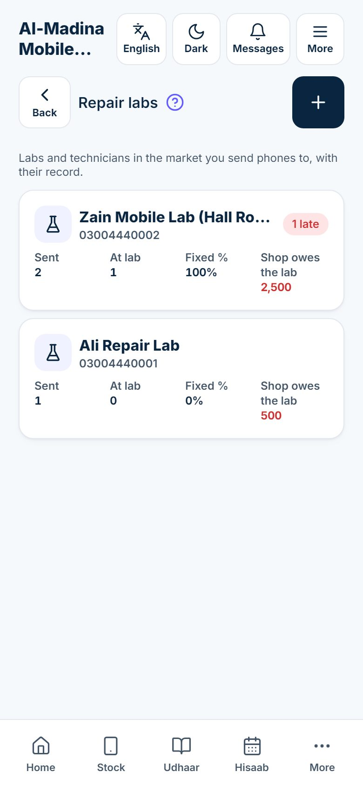
Picture 29: Repair labs: each lab with sent, at lab, fixed % and what the shop owes
Tap a lab to open its record. At the top is Shop owes the lab with its phone and address and Open the lab's khata. Then nine figures:
Figure
Meaning
Sent
Phones sent to this lab (cancelled trips not counted).
At lab
Phones with this lab right now.
Late
Phones still there after the promised day.
Fixed
Phones it returned fixed.
Not fixed
Phones it returned without fixing.
Fixed %
Fixed out of all returned.
Avg days
How many days it usually keeps a phone.
Charges
Everything it has charged.
Paid on the spot
What you paid when collecting.
Below that, Lab trips lists every phone you sent there with the job number, dates, days taken, the work, and the result (At lab, Fixed with its charge, Not fixed).
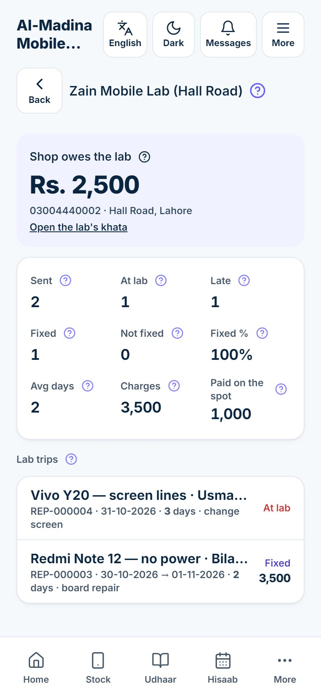
Picture 30: One lab's record: what the shop owes, nine figures and every lab trip
The repair sticker
When a customer's phone comes in, stick a small sticker on it so it is never mixed up with another phone on the bench or at a lab.
On the job tap Print sticker. The sheet Repair sticker opens: Stick it on the customer's phone. Pick what goes on it.
Under What goes on it tap each field to put it on or take it off: Shop name, Job no., Barcode, Customer, Mobile no., Phone model, IMEI, Problem, Came with, Date in, Ready by, Estimate, Advance, Left to pay, Lab and Note.
Choose the Sticker size (50×30, 58×40, 60×40, 70×40 mm or an A4 sheet) and the Copies of each (1, 2 or 3).
Tap Print.
Your choice of fields, size and copies is remembered on this phone or computer for next time.
The barcode on the sticker is the job number. Scan it anywhere in the app and the repair job opens straight away, which is handy when a lab returns five phones at once.
Example: the Vivo's sticker reads AL-MADINA MOBILE ZONE · REP-000004 · Usman Tariq · 03215550003 · Vivo Y20 — screen lines · Screen / display · Ready 02-11 · Left Rs. 5,500, with the barcode at the bottom.
Picture 31: The printed repair sticker with job number, customer, phone, problem, ready date and barcode
Sending the customer a status link
Customers often call to ask whether their phone is ready. Send them a link once, and they can check it themselves.
Open the repair job and tap Send status link to customer.
Tap Send on WhatsApp. WhatsApp opens with the customer's number and a ready message; tap send. Or tap Copy link and paste it anywhere.
The customer opens the link without logging in and sees the shop's name, the phone and job number, each step (Received, Diagnosed, In progress, Ready, Delivered) with its date, the ready-by day, the bill, what was paid and what is left, and a Call the shop button. The page changes as you move the job forward.
15. Loans to other shops (amanat)
In the market, shops often give phones to each other "on amanat": the other shop shows it to its customer and either sells it or brings it back. The phone stays yours until it is sold or comes back. Mobile Shop tracks every such phone so none is forgotten at someone else's counter.
Give a phone on amanat
Example: you give an Apple iPhone 12 to Star Mobiles (Hall Road) for three days.
Go to More → Loans (amanat). The top card shows how many phones at other shops right now.
Tap Give a phone on amanat.
Which phone?: tap the iPhone 12 in the list, or search or scan it.
Which shop?: search Star. A new shop can be added right there with +.
Back in: tap 3 days (or 7, 15, 30 days, or No date).
Add Notes if you want, and tap Give on loan.
The same button, Give on loan (amanat), is on the phone's own page.
The phone now shows On loan in the stock list (and is not sold by mistake at your counter), and it appears as a card on the Loans screen with how many days it has been out (0 days out), the shop's name, the date given and back by, and a Shop button to open the shop's page and call them.
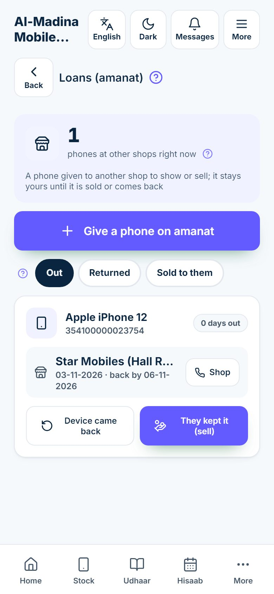
Picture 32: Loans (amanat): phones at other shops, with Device came back and They kept it (sell)
When it comes back, or they keep it
The Loans screen has three tabs: Out, Returned and Sold to them. Under each card in Out:
Device came back: the app asks Did this phone come back to you? It goes back into your stock. Tap Yes, it is back. The phone is In stock again.
They kept it (sell): the other shop sold it or wants to keep it. Type the Agreed price (for example 150000) and what they Paid now (for example 100000). The card shows On their khata50,000. Tap Confirm. A normal sale bill is made in Sales, and the rest sits on that shop's khata.
A loan past its back-by date shows Overdue and is counted on the top card. The Sold to them tab keeps an Open the bill button for every phone they kept.
Asking price, price changes and who may go below
Every phone carries an asking price: the price you want for it. It is set when you buy the phone, and you can change it on its page with Change asking price.
At the sale
The bill shows Asking: 40,000 next to the price box. Type the real Sold for amount: the asking price is only a target.
If the market has moved, tick Update asking price, type the new asking price (say 45,000) and a reason. The sale then goes through at the new figure.
Check before you sell
When you tap Complete sale, a last screen Check before you sell shows every phone on the bill: its cost (owner and manager only), the asking price, the new asking price if you changed it, the sold price and the profit. A red line appears when a phone is going under its asking price. Tap Confirm and make the bill to write the bill.
From then on there is one record: the customer's receipt, the phone's history, the reports and the khata all show the same sold price.
Nothing is overwritten
The phone's history keeps the first asking price (40,000), a line Price changed 40,000 → 45,000 · at the sale · market rate with the seller's name and the time, and the sale at 45,000. On the phone's money card you see Asking now and, when it is different, First asking.
Price rules: who may go below the asking price
The owner decides this in More → Settings → Price rules. There are two settings:
Selling under the asking price
Changing the asking price
Each one can be set to:
Choice
What it means
Anyone
Every staff member may do it.
Owner / manager
Staff see a message that it needs the owner or manager, and cannot go on.
With owner PIN
A PIN box appears on the check screen. The owner types his quick PIN on the spot, the sale goes through, and the approval is written on the record.
The owner and manager may always do both. The owner sets his PIN under More → Staff. Five wrong PINs lock the box for ten minutes. The same rule covers selling an item under its minimum sale price (chapter 13).
Example: your salesman Kashif wants to sell a Rs. 40,000 phone for Rs. 38,500. The rule is With owner PIN. On the check screen a red line shows the phone going Rs. 1,500 under asking. You type your PIN on his phone, the bill is made, and the record shows "approved by owner".
The Prices report
Reports → Prices (owner and manager) lists every asking-price change and every sale under the asking price in the chosen period: the phone and IMEI, who did it, old and new price or asking against sold, the difference, the profit, the reason, the bill number, and who approved by PIN. A count per person is shown on top, so you can see at a glance who gives the most discounts.
16. Udhaar khata and payments
Every shop gives some things on credit and takes some things on credit. In the app this is called udhaar (credit), and every person has one khata (their account page). The app keeps each khata for you: every sale, purchase, payment, return and len-den with that person lands in it by itself, and the balance is always worked out from those records. You never type a balance by hand.
Open the Udhaar khata
Tap Udhaar in the bottom bar (or Home → Udhaar, or More → Udhaar).
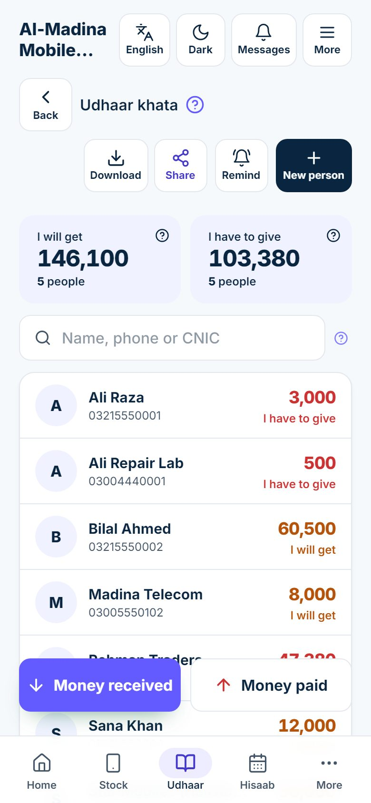
Picture 33: The Udhaar khata: who owes you and whom you owe
At the top you see two big boxes:
I will get is the total that people owe you, and how many people. Tap it to show only them.
I have to give is the total you owe others (dealers, other shops, repair labs), and to how many people.
Below them is the list of people. Each name shows the amount and, in colour, I will get or I have to give. A person whose account is settled shows Clear.
The buttons at the top:
Download gives the whole khata as PDF, Excel or CSV. Share sends it straight to WhatsApp or another app.
Remind opens the WhatsApp reminder list (see below).
New person adds a customer, dealer, other shop or technician.
Use the search box (Name, phone or CNIC) to find anyone quickly. Even a few digits of the phone number are enough.
Add a new person
Tap New person.
Write the Name and the Mobile number (after +92, without the first 0, for example 3001234567).
Pick the Type: Customer, Dealer, Other shop or Technician.
If you want more, tap More details: CNIC (and the CNIC scan), City, Address, Notes and, for a dealer, the wholesale price. It opens by itself when you edit someone who already has these.
If this person already owed you (or you owed them) in your old register, write it in Opening balance and choose Party owes me or I owe party.
Tap Save.
Money received (a customer pays you)
Example: Bilal Ahmed owes you Rs. 60,500 for a phone. Today he brings Rs. 10,000.
Tap Money received (on the khata, or on Bilal's own page).
Pick Bilal Ahmed if he is not already chosen. His balance shows beside his name.
In Amount write 10000.
Pick the Method (see the list below). Here it is Cash.
Add Notes if you like (for example "first part").
Tap Receive money.
The four methods:
Cash: he paid at the counter. The money goes into your galla (cash drawer).
Online: he sent it by bank transfer, Easypaisa, JazzCash or another app. Pick which of your accounts received it; the galla does not change.
Cheque: he gave a cheque. Cheques are kept in their own account until they clear.
From abroad: a relative sent it through a remittance service. Write the amount in their currency and the rate (for example 500 SAR × 74.20); the app works out the rupees.
Bilal's balance goes down to Rs. 50,500 at once. The payment is put against his oldest unpaid bills first, so his bills show Paid or Part paid correctly. A receipt is ready to print or send on WhatsApp.
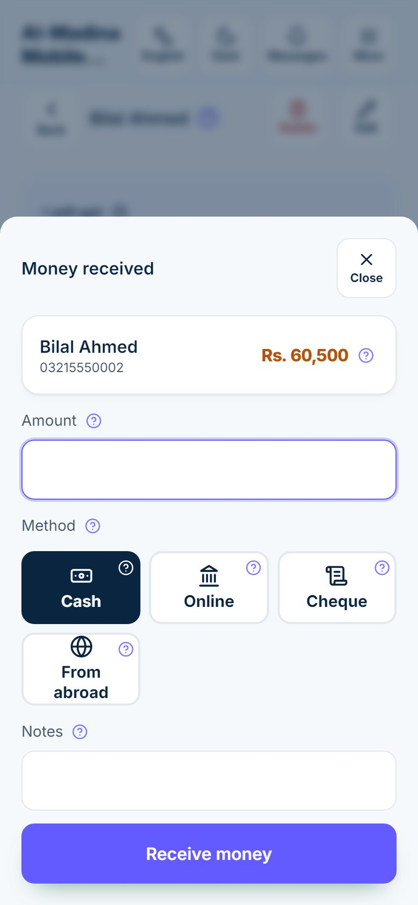
Picture 34: Money received: amount and method
Money paid (you pay a dealer or seller)
Example: you bought five phones from Rehman Traders and still owe them Rs. 47,280. Today you pay Rs. 20,000 from your HBL account.
Tap Money paid.
Pick Rehman Traders.
Amount20000, MethodOnline, account HBL Current.
Tap Pay money.
What you owe Rehman Traders drops to Rs. 27,280 and the HBL balance in Cash & bank drops by Rs. 20,000.
A person's page
Tap any name in the khata to open their page.
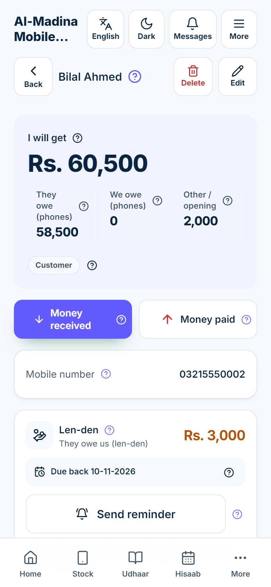
Picture 35: One person's khata page
At the top is the big balance card: I will get, I have to give or Clear. Under it the balance is split into three parts so you understand where it comes from:
They owe (phones) is what is still unpaid on their sale bills.
We owe (phones) is what you still owe on your purchase bills from them.
Other / opening is everything else: the opening balance from your old diary, accessories, len-den and adjustments.
Below that you will find:
Money received and Money paid buttons for this person.
Their Mobile number, with call and WhatsApp.
The Len-den card (chapter 17).
The phones you sold to them and bought from them.
Khata history: every sale, payment, return and len-den with the date, the amount and the running balance after each line.
Edit to change their name, phone or type, Delete to remove a person entered by mistake, and Download for their statement as PDF, Excel or CSV.
Fixing a mistake
The khata is like a bound register: pages are never torn out. If a payment was entered wrongly, open it and cancel it with a reason. The old entry stays (crossed out) and a reversing entry fixes the balance. Then enter the correct one. This way the history always shows what happened and who did it.
Udhaar reminders on WhatsApp
Tap Remind at the top of the Udhaar khata. Everyone who owes you is listed, biggest balance first, with how many days their account has sat and when they were last reminded. Narrow the list with Older than 7 / 15 / 30 days.
Tap the green WhatsApp button beside a name.
WhatsApp opens with the message already written in the shop's language, for example: "Bilal, a reminder from Al-Madina Mobile: Rs. 50,500 is outstanding on your account."
Press send in WhatsApp.
Send to all goes through the list one by one so you can send each message quickly.
Automatic reminders: go to More → Notifications → Udhaar reminders, tick Remind customers automatically, and choose after how many quiet days (When the account has sat for) and at what time. Each night the app reminds the people whose accounts have sat that long. Automatic sending needs the WhatsApp Business service set up by your software provider; without it, the messages wait in Messages (the bell at the top) and open in WhatsApp with one tap.
The night report
The owner can get the whole day's hisaab every night on WhatsApp or by email, even when he is not at the shop.
Go to More → Notifications.
Under To owner, write the Owner WhatsApp number and/or the Owner email.
Under Night report to the owner, tick Send the day's hisaab every night · WhatsApp and/or · Email.
Set the time (At), for example 21:30.
Every night one message arrives with: phones sold and the amount, money in hand, udhaar given and received, expenses, profit, total to get and to give, and phones in stock. Send today's hisaab now sends it immediately, which is handy to test.
17. Len-den (money given or taken with no bill)
In every market, money moves between people without any sale or purchase. You lend Rs. 25,000 to a regular customer for a family need. A neighbour shop lends you Rs. 50,000 for a day to pay a dealer. In shop language this is len-den (give and take). It is not a sale and not a purchase, so it should not spoil your sales or udhaar figures.
The app keeps len-den in the same khata as the person's bills, so a person always has one total. But it is marked as len-den everywhere, so every report shows it apart, and later you can adjust it against a bill if that person buys from you or sells to you.
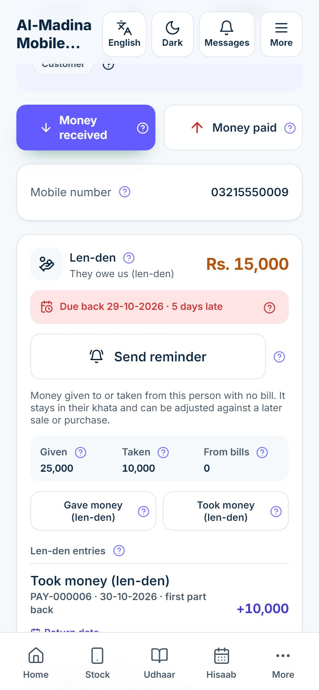
Picture 36: The Len-den card on a person's page
Record money you gave (len-den out)
Example: Usman, a regular customer, asks for Rs. 25,000 and promises to return it by the 29th.
Open Usman's page from the Udhaar khata (add him with New person if he is new).
Scroll to the Len-den card and tap Gave money (len-den).
Write the Len-den amount: 25000.
Pick how the money left: Cash from the galla, or Online from a bank or wallet.
Set the Return date (optional), for example 29-10-2026.
Add a note if you like ("for his sister's wedding").
Tap Save — money given.
Usman's card now shows They owe us (len-den) Rs. 25,000 and Due back 29-10-2026. A small receipt titled "Len-den" can be printed or sent to him.
Record money you took (len-den in)
Example: Madina Telecom next door lends you Rs. 50,000 in cash.
Open Madina Telecom's page.
Tap Took money (len-den).
Amount 50000, method Cash, return date if agreed.
Tap Save — money taken.
The card shows We owe them (len-den) Rs. 50,000. The money is now in your galla, and the day's hisaab shows it as Len-den taken, not as a sale.
What the Len-den card shows
The open len-den in big figures, with They owe us (len-den), We owe them (len-den) or No len-den open.
The return date: Due back with the date, Due back today, or in red 5 days late. For money the shop owes, it says We give back by the date.
Given: all len-den money the shop has given this person.
Taken: all len-den money taken from this person, including money he paid back.
From bills: the rest of the khata balance that comes from bills, not from len-den.
Len-den entries: each entry with its number, date and note. Given shows with minus, taken with plus. Cancelled ones are struck through.
Worked example: you lent Usman Rs. 25,000. On 30-10 he returned Rs. 10,000. The card shows Given 25,000, Taken 10,000, and They owe us (len-den) Rs. 15,000.
When the person pays back
Money coming back from a len-den is also len-den. Open the person's page and tap Took money (len-den) with the amount he returned. Do not use Money received for this, because that is for bills.
Likewise, when you return borrowed money to Madina Telecom, use Gave money (len-den).
Return dates and reminders
Set the date when you record the entry, or later: in Len-den entries, tap the date line under an entry, choose the new Return date and tap Save date.
When the date is near or passed, the card turns red with the number of days late.
Tap Send reminder. WhatsApp opens with a polite message showing the amount and the date. Press send. The card then shows Last reminded with the date.
If automatic reminders are on (More → Notifications → Udhaar reminders), the app also reminds people whose len-den is due tomorrow or late, at most once every three days.
The Home screen's Needs attention also shows "people late returning len-den".
Adjust len-den against a bill
Sometimes the same person later buys a phone from you, or sells you one. The money already given can then pay that bill.
Example: Kamran left Rs. 10,000 with you as len-den (you recorded Took money (len-den)). Next week he buys a handsfree, charger and cover for Rs. 8,000 on udhaar. On his page the app now shows a card Adjust against bills: "Rs. 8,000 of the money they gave can pay their open sale bills".
Open the person's page.
Find the Adjust against bills card.
Tap Adjust now.
The bill becomes Paid, and Rs. 2,000 stays open as len-den. The khata total does not change at all; only the bills now show as paid. No money moves in the galla.
The same works the other way round: money the shop gave can pay the shop's open purchase bills to that person. Old advances are used first, then len-den, oldest first.
Cancelling a wrong len-den entry
Open the entry and cancel it with a reason, like any payment. It stays in the list, struck through, and the balance is corrected by a reversing entry.
Where len-den shows in reports
Day's hisaab: Len-den given under Went out and Len-den taken under Came in.
Shop audit → Udhaar: the line Of which len-den tells you how much of the total udhaar is len-den. It is inside the total, not extra.
Shop audit → Len-den: a full screen of its own (see chapter 21).
Udhaar received in reports counts only bill money, never len-den.
18. Installments (qist)
Many customers buy a phone on installments: some money now (advance), the rest in equal monthly parts called qist. A guarantor (zamin) signs for the customer. The app sets up the plan, reminds you who is due, and keeps everything in the customer's khata.
Sell a phone on installments
Example: Waqas Ali buys a Samsung Galaxy A35 for Rs. 85,000. He pays Rs. 25,000 now and the rest in 6 monthly installments.
Tap Sell and pick the phone.
Set the price: Rs. 85,000.
Tick Sell on installments (qist).
Choose the customer, Waqas Ali (or add him).
Write the Advance paid now (Rs): 25000. It is taken by the payment method you chose on the sale (cash, online or cheque).
Under How many months, tap 3, 6, 9, 12, 18 or 24. Here tap 6.
The Monthly (Rs) amount fills itself: (85,000 − 25,000) ÷ 6 = Rs. 10,000. Change it if you agreed a different figure; the last installment takes whatever is left.
Set the Day of month the installment is due (for example the 10th). Leave First installment on empty to start next month on that day, or pick a date.
Under Guarantor (zamin), write the guarantor's name, mobile and CNIC.
Complete the sale.
The receipt prints the plan: "Advance Rs. 25,000 · 6 × Rs. 10,000 · day 10 of each month", the first date and the guarantor. The rest (Rs. 60,000) sits on Waqas's khata as normal udhaar.
The installments list
Go to More → Installments (qist).
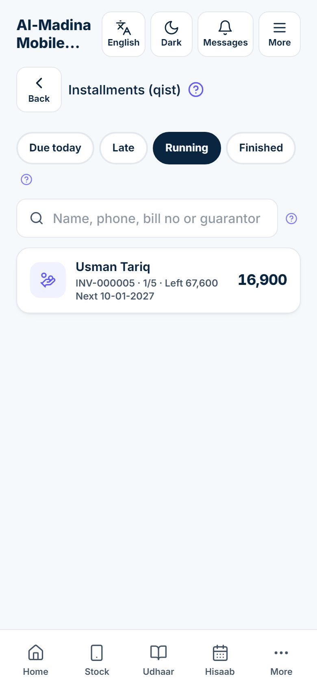
Picture 37: Installments (qist): plans by status
Four tabs show the plans:
Due today: installments that fall due today.
Late: plans with a missed installment.
Running: all plans still being paid.
Finished: plans fully paid.
Search by Name, phone, bill no or guarantor. Each plan in the list shows the customer, the bill number, how many installments are paid (for example 1/5), the amount left and the next date.
Tap a plan to see the schedule. Each installment is marked Paid, Part, Today, Late or Due. The customer's and guarantor's numbers are there with Call and WhatsApp.
Take an installment
Open the plan and tap Take installment.
The next installment's amount is filled in. Change it if he pays only part, or pays two months together.
Pick cash, online or cheque.
Save.
It is a normal payment on that bill, so the khata, the day's hisaab and the customer's statement all agree.
Reminders
Tap Remind on WhatsApp on a plan. WhatsApp opens with "your installment of Rs. 10,000 is due on 10-01-2027" (or "is late by 5 days").
When Remind customers automatically is on, plans whose installment is due tomorrow or late are reminded by themselves at night, at most once in three days.
Home's Needs attention shows installments due today and installment plans running late.
19. Day's hisaab, expenses and money accounts
At the end of the day every shopkeeper asks three questions: how much did I sell, how much money is in my hand, and where did the rest go? The Day's hisaab answers all three on one screen.
Open the Day's hisaab
Tap Hisaab in the bottom bar (or Home → the hisaab card → See details, or More → Day's hisaab).
Pick the period at the top: Today, Yesterday, Week, This month or From – to. For From – to choose two dates; "from" cannot be after "to", and neither can be in the future.
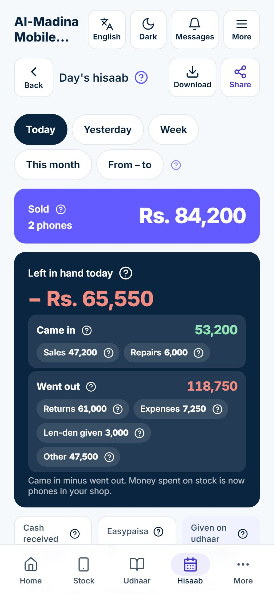
Picture 38: The Day's hisaab
What you see, from top to bottom:
Sold: how many phones were sold and the total amount. Sales that were returned are not counted.
Left in hand today: the big dark card. It is Came in minus Went out.
Came in, with the reasons as small chips: Sales, Udhaar received, Repairs, Len-den taken, Moved in from own account, Other.
Went out, with the reasons: Stock bought, Returns, Expenses, Paid to people, Len-den given, Moved to own account, Other.
Boxes for Cash received, Easypaisa (and your other wallets), Given on udhaar, Udhaar received, Expense, Given back on returns, Cut on returns and Profit (owner and manager only).
What was sold: each sale with how it was paid (Cash, Udhaar, Part udhaar and so on) and which staff member sold it.
Tap a chip or a box to see the entries behind it. Download gives the hisaab as PDF, Excel or CSV, and Share sends it on WhatsApp.
What "Left in hand" means, with a worked example
"Left in hand" is real money: everything that came into your galla, bank and wallets, minus everything that went out, in the chosen period. It is not profit. Money you spent on stock is not lost; it is now phones on your shelf.
Example day at Al-Madina Mobile:
What happened today
Came in
Went out
Sold a Vivo Y21 for cash
Rs. 38,000
Sold an Oppo A17 for cash
Rs. 45,000
Bilal paid part of his udhaar
Rs. 10,000
Repair delivered (screen change)
Rs. 6,000
Bought a used iPhone 11 from a customer
Rs. 72,000
Paid electricity bill and tea
Rs. 3,050
Lent Usman (len-den)
Rs. 3,000
Total
Rs. 99,000
Rs. 78,050
Left in hand = Rs. 99,000 − Rs. 78,050 = Rs. 20,950.
Now suppose the same day you had also bought five phones from a dealer for Rs. 150,000 cash. Then Went out would be Rs. 228,050 and Left in hand would show − Rs. 129,050. Do not panic. The minus does not mean you lost money; Rs. 150,000 is now standing in your shop as five phones. Your profit is shown separately in Profit and in Reports.
Add an expense
Owner and manager. Home → Expense, or More → Expenses.
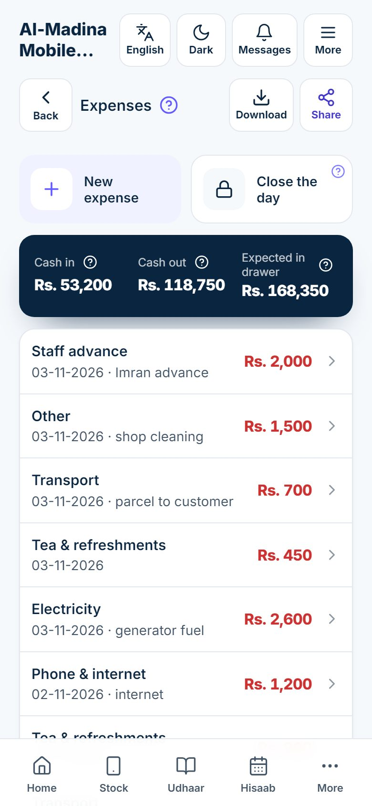
Picture 39: Expenses list with Close the day
The top of the screen shows today's Cash in, Cash out and Expected in drawer, so you always know what the galla should hold.
Example: you paid Rs. 2,600 for generator fuel.
Tap New expense.
Pick the Category: Electricity. Other ready categories include Shop rent, Salary, Staff advance, Tea & refreshments, Repair parts, Transport, Phone & internet, Taxes & fees, Owner drawing and Other.
Amount: 2600.
Details (optional): "generator fuel".
Tap Save.
The expense is taken from the galla and shows in the list with its date and details. It also appears in the day's hisaab under Expenses and in the profit report.
To add your own category (for example "Committee" or "Generator"), open the category list and add a name. You can also rename or remove your own categories.
To fix an expense, tap it and choose Edit, or cancel it with a reason. A cancelled expense stays in the list, crossed out, so nothing disappears without a trace.
Close the day
At night, count the galla and close the day. This catches mistakes while everyone still remembers the day.
On Expenses, tap Close the day.
You see Opening cash, Cash in, Cash out and Expected in drawer.
Count the cash in the drawer and type it in Counted cash, for example 168000.
Difference shows any shortage or extra. If Expected was Rs. 168,350, the difference is − Rs. 350.
Tap Close the day.
Once a day is closed it says Already closed.
Money accounts: galla, bank, Easypaisa, JazzCash
Most shops keep money in more than one place: the galla (cash drawer), a bank account, and one or two wallets like Easypaisa and JazzCash. The app keeps a separate balance for each.
Go to More → Cash & bank.
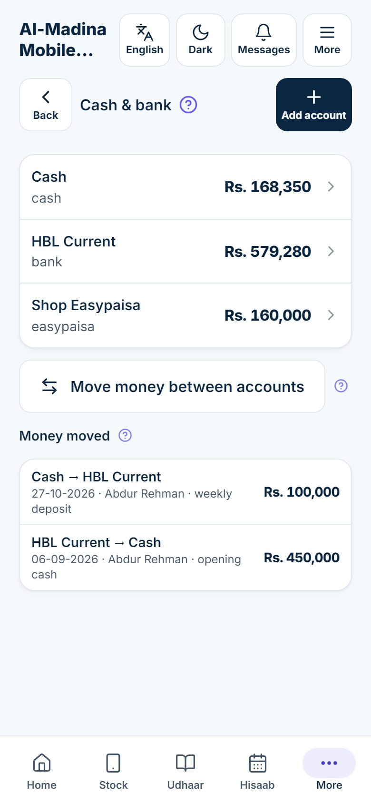
Picture 40: Cash & bank: each account with its balance
Each account shows its name, its type and its balance. Tap an account to open its Cash book: every rupee in and out with the date and reason.
Add an account:
Tap Add account.
Write the Account name, for example "Shop Easypaisa" or "HBL Current".
Pick the Type (cash, bank, Easypaisa, JazzCash and so on).
Write the Account / wallet no. if you like.
Write the Opening balance: what is in that account today.
Save.
The new account now appears as a choice whenever you pick Online for a sale, purchase or payment.
Move money between accounts. Example: every Saturday you deposit Rs. 100,000 from the galla into HBL.
Tap Move money between accounts.
From: Cash. To: HBL Current.
Amount: 100000. Note: "weekly deposit".
Tap Move.
Only the two balances change. It is neither a sale nor an expense. The move is listed under Money moved with the date and who did it.
20. Reports and downloads
Owner and manager: Home → Profit & reports, or More → Reports.
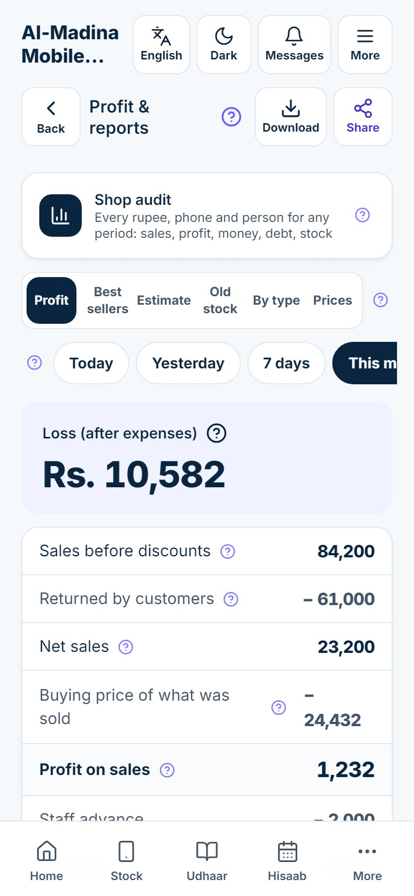
Picture 41: Profit & reports
At the top is a card that opens the Shop audit (chapter 21), the deepest report in the app. Below it are the quick report tabs:
Profit: the profit for the period.
Best sellers: which models sell most.
Estimate: a guess for the next 7 days and which phones will run out.
Old stock: phones by how many days they have been in the shop.
By type: stock by type (phones, tablets, watches) with units, value at cost and at asking price.
Prices: every asking-price change and every sale under the asking price, with who did it.
Choose the period with the chips: Today, Yesterday, 7 days, This month or From – to.
The Profit report
The Profit tab reads like a simple account statement, line by line:
Sales before discounts
Discounts given
Returned by customers (minus)
Net sales
Buying price of what was sold (minus)
Profit on sales
Repair & other income (repairs, cuts kept on returns)
Each expense category (minus)
Real profit (after expenses), or Loss (after expenses) if expenses were bigger.
Below it you also see Tax collected and Owner took out (not an expense).
Worked example (one week): Net sales Rs. 420,000. Buying price of what was sold Rs. 371,500. Profit on sales Rs. 48,500. Repair income Rs. 12,000. Expenses Rs. 18,200 (rent share, electricity, tea, transport). Real profit = 48,500 + 12,000 − 18,200 = Rs. 42,300.
Best sellers and Estimate
Best sellers lists models by how many were sold and how much they brought in. Look at it before you go to the market to buy.
Estimate looks at your last four weeks and shows Next 7 days (estimate) and Which phone will run out, with the advice Buy more, OK or Not selling. It is a guess based on your own sales, not a promise.
Old stock and Prices
Old stock groups the phones still in the shop by days in stock. A phone sitting for 60 days is money stuck on a shelf; think about a lower price or an exchange deal.
Prices shows each asking-price change and each sale made under the asking price, who did it and when. It is a quiet check on the discounts your staff give.
Downloading and sharing (PDF, Excel, CSV)
Almost every list in the app can be downloaded or shared.
Tap Download or Share at the top right of the report.
Choose the format (see the list below).
Download saves the file (website: your Downloads folder; Android app: Documents › MobileShop). Share opens your phone's share list, so you can send it on WhatsApp straight away.
The formats:
PDF: a ready file to send or keep. Urdu reports stay in proper Nastaliq.
Excel: for Excel or Google Sheets.
CSV: a simple file that any software can open.
Print (Download only): print on paper.
Download and Share buttons are also on Day's hisaab, Stock in shop, Udhaar khata, a person's page, Stock list, Expenses, Sales list and Purchases list.
Balance sheet and trial balance
The Balance tab shows your shop's books the way an accountant reads them. Both pages are worked out from every entry, so nothing on them is typed by hand and nothing can be changed there.
Open More → Reports and tap the Balance tab.
Under As of, keep today or pick an older day, for example 30 June for the yearly books.
Balance sheet shows three boxes: What the shop has (galla, bank and wallets, People who owe you, Stock at cost), What the shop owes (You owe people, Tax collected, still to pay) and Owner's share (the owner's money put in, Profit so far, minus Owner took).
Tap Trial balance to see every account with its debit or credit balance and the two totals.
The green line Balanced confirms that what the shop has equals what it owes plus the owner's share.
The Shop audit is the full check-up of your business. It answers questions like: "How much did I really earn last month?", "Where did the money go?", "Who owes me, and since when?" and "Which phones are stuck on my shelf?". Every figure is worked out from the shop's own records, and every figure can be tapped to see the exact bills, payments or phones behind it.
Where: More → Shop audit, or the Shop audit card at the top of Profit & reports. Owner and manager only. (The Security tab is for the owner alone.)
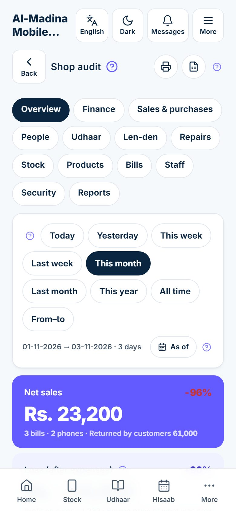
Picture 42: Shop audit: the tabs and the period bar
The tabs and the period bar
Along the top are the tabs: Overview, Finance, Sales & purchases, People, Udhaar, Len-den, Repairs, Stock, Products, Bills, Staff, Security and Reports.
Under them is the period bar, the same on every tab:
Today, Yesterday, This week, Last week, This month, Last month, This year, All time, or From–to for any two dates.
The line under the chips shows the exact dates and how many days, for example "01-11-2026 → 03-11-2026 · 3 days".
As of lets you pick a past day for balances. Pick 30 September and every balance (cash and bank, who owes whom, phones in stock) is rebuilt exactly as it stood that evening.
The two round buttons at the top right are Print and Excel: they give the screen you are looking at as a printable page or an Excel file.
Most figures also show the change against the period before, for example "+12%" in green or "−8%" in red.
Drill down: every figure opens its rows
This is the most important habit in the audit. When a number looks strange, tap it.
Example: the Overview says "Expenses Rs. 38,400" for this month, and you feel it is too high. Tap it. The list of every expense opens, biggest first, with date, category, amount and who entered it. You find a Rs. 9,000 "Repair parts" entry that should have been charged to a customer's repair. Now you know exactly what to fix.
The same works for sales, money in and out, people's balances, phones in stock and everything else. Nothing in the audit is a number you cannot check.
Overview
The Overview is one page for the whole period:
Net sales with the number of bills and phones, and what customers returned.
Real profit (after expenses), or loss.
Stock bought, expenses, money in and money out for the period.
Cash and bank, phones in stock, people who owe us and people we owe, each shown as Start → End → Now.
Needs a look: things to deal with today, such as ID checks not cleared, stock alerts, late installments and len-den return dates. Tap a chip to open the list.
Checks: the books proving themselves. For example: cash at start + money in − money out = cash at end; every entry balanced; the khata matches the ledger; stock at start + in − out = stock at end. A green tick means the figures agree.
Finance: profit and cash
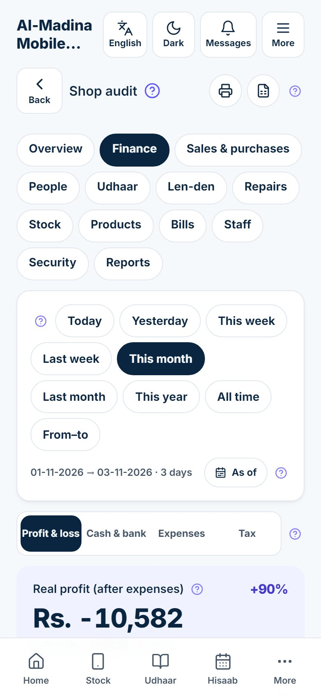
Picture 43: Finance: profit and loss, cash and bank, expenses, tax
Finance has four parts:
Profit & loss: sales before discounts, discounts, returns, net sales, cost of what was sold, gross profit, expenses, profit after expenses, other income and Real profit (after expenses). Each line has the period before in brackets, and a chart shows profit by day, week or month.
Cash & bank: where money came from and where it went, for the galla, each bank and each wallet, from start to end of the period. Money moved between your own accounts is shown apart. Money from abroad shows the sender, the currency, the rate and the reference.
Expenses: by category with the period before, the largest entries and who entered them.
Tax: every bill on which tax was charged.
Worked example: last month Net sales Rs. 1,250,000, cost of goods Rs. 1,105,000, gross profit Rs. 145,000, expenses Rs. 61,000, repair income Rs. 22,000. Real profit = 145,000 − 61,000 + 22,000 = Rs. 106,000.
Sales & purchases
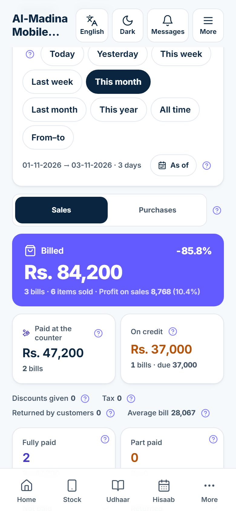
Picture 44: Sales & purchases: billed, paid at the counter, on credit
Two halves, Sales and Purchases.
On Sales: the total Billed with bills, items sold and Profit on sales; then Paid at the counter against On credit (with how much is still due); Discounts given, Tax, Returned by customers and Average bill; and how many bills are Fully paid, Part paid or not paid. Below that, sales by employee and by customer.
On Purchases: what was bought, what was paid and what is still owed, per supplier and per employee.
People
Top customers and suppliers by the measure you pick: sales, number of bills, profit, purchases, phones, or the biggest amounts owed either way. Tap a person to open their Whole journey: first and last dealing, phones sold to them and bought from them, money received and paid, returns and the balance, also as of any past day.
Udhaar
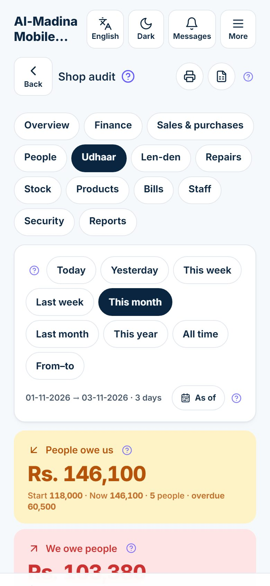
Picture 45: Udhaar: people owe us, we owe people
People owe us and We owe people, kept apart, each with the start, now, the number of people and what is overdue.
Of which len-den: the part of the udhaar that is len-den. It is inside the total, not extra.
How the khatas moved in the period: udhaar given, received, taken, paid, returns, len-den given and taken, opening balances.
Age of each debt, counted from the oldest unpaid bill, in age bands.
Overdue: only bills that carried a promised date ("Promised to pay by" on the sale) can be overdue. A bill with no date only shows its age; it is never called overdue.
The people and the phones on unpaid bills.
Len-den
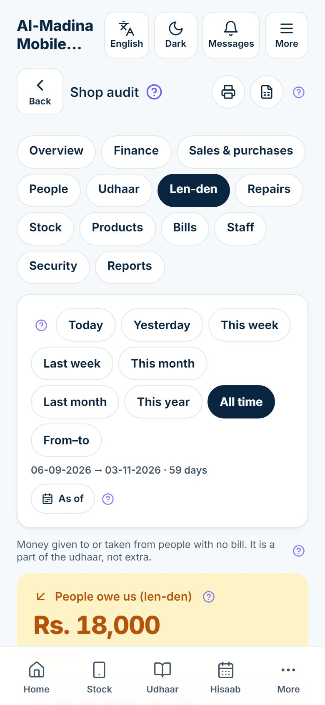
Picture 46: Len-den in the shop audit
This tab shows money given to or taken from people with no bill (chapter 17):
People owe us (len-den) and We owe people (len-den): what is still open now (or on the As of day), and how many people.
Len-den given and taken in the period, compared with the period before.
How much was later adjusted against bills, and how many entries were cancelled (nothing is deleted).
A chart by day, week or month; a split by method (cash, bank, Easypaisa and so on).
Return dates: entries with a date, late first: Late, Today, In 3 days, Later.
Len-den by person: each person's given and taken, their whole khata and what is still open.
Every entry of the period with its number, date, who entered it and the note.
Repairs and labs
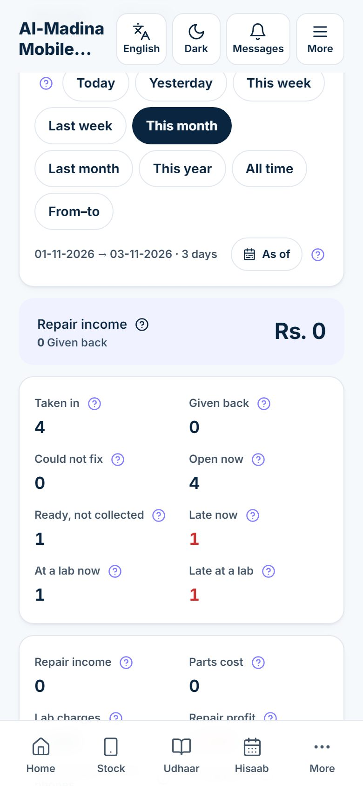
Picture 47: Repairs in the shop audit
Counts: Taken in, Given back, Could not fix, Open now, Ready, not collected, Late now, At a lab now and Late at a lab.
Money: Repair income, Parts cost, Lab charges, Repair profit, lab charges on the shop's own phones, and the average bill.
A chart over the period, each repair lab with its record, what needs a look now, and the most common problems.
Example: you see "Ready, not collected 6". Tap it, and call those six customers. That is money and shelf space waiting at your counter.
Stock and ageing
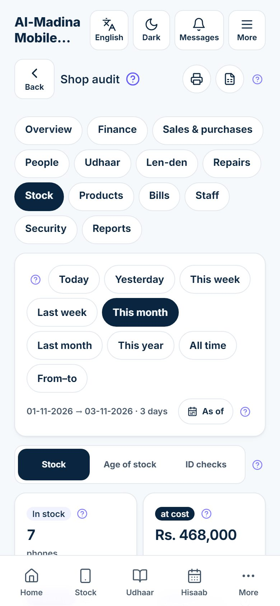
Picture 48: Stock in the shop audit
Stock has three parts:
Stock: phones in stock now (or on the As of day) by condition, PTA status, ID check, type and brand; value at cost and at asking price; the expected margin; the most expensive phones and the ones with the thinnest margin.
Age of stock: phones in age bands (Fresh, Normal, Slow, Attention and older) using your own limits from Settings → Stock audit thresholds. Alerts point out dead stock, high-value phones that are slow, thin margins, phones with no asking price, ID checks still pending, and phones that came back more than once.
ID checks: how many checks were done, and every check that was skipped, with who skipped it, for which phone and supplier, and why. A skipped check is never counted as a completed one.
Products, Bills and Staff
Products: what sold by model, brand or type: units, share, revenue, profit, margin, average price, average days to sell, returns and stock left, marked Top, Average or Low.
Bills: every bill of the period by kind, status and employee, and everything that was cancelled, with who cancelled it and why.
Staff: each employee's sales, money received, purchases and actions in the period. The owner also sees the security columns.
Security (owner only)
One feed of every bent number or rule: asking price changed, sold under asking or under cost, discounts, cancellations, stock adjustments, opening balances, skipped ID checks and wrong owner PINs. Each line says who, when, before and after, the reason and who approved it, with counts per employee.
Reports: the complete audit report
The Reports tab makes the complete shop audit report. Pick the sections you want, choose summary or detailed, and get it as Print / PDF or Excel (one sheet per section). The report states the period, the As of day, the currency and what is not recorded. Every single report is also listed here with its own download.
What the audit does not show
The audit only shows what the app records, and it says so plainly:
Due dates on bills are not recorded unless you typed a promised date, so the app shows the age of a debt instead of calling it overdue.
Tax on purchases is not recorded, so there is no input-tax figure.
Remittance fees are only known if you typed them when the money came from abroad.
Buying prices and profit are for the owner and manager only.
22. Staff, roles and attendance
Each person who works in the shop should have their own login. Then every bill shows who made it, the owner can see what each person did, and each person only sees what their role allows.
Owner only: More → Staff.
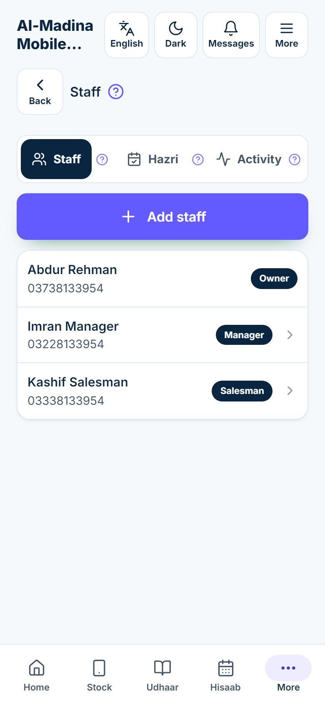
Picture 49: Staff: the list with each role
The Staff screen has three tabs: Staff, Hazri (attendance) and Activity.
Add a staff member
Example: a new salesman, Kashif Mehmood.
Tap Add staff.
Name: Kashif Mehmood. This name prints on the bills he makes.
Mobile number: 3005550707. This is his login.
Password: at least 6 characters.
Quick PIN (4-6 digits), for example 4321, for fast login on his own phone.
Role: Salesman.
Tap Save.
Tap a staff member later to change the Role, set a New password, or Disable / Enable him. A disabled person cannot log in, but everything he did stays in the records.
The four roles
There are four roles: Owner, Manager, Salesman and Technician. There is one owner per shop.
What the person can do
Owner
Manager
Salesman
Technician
Sell, add stock, take returns
Yes
Yes
Yes
No
Money received / paid, len-den
Yes
Yes
Yes
No
See buying price and profit
Yes
Yes
No
No
Sell below the buying price
Yes
Yes
No
No
Cancel bills and payments
Yes
Yes
No
No
Add expenses, close the day
Yes
Yes
No
No
Profit & reports, shop audit
Yes
Yes
No
No
Security feed in the audit
Yes
No
No
No
Take a phone in for repair
Yes
Yes
Yes
No
Work on repairs
Yes
Yes
No
Yes
Edit brands and models
Yes
Yes
No
No
Staff, shop settings, software fees
Yes
No
No
No
Override a blocked ID check
Yes
No
No
No
The salesman and the technician still see their own day's work.
Which role for a salesman who must not see profit?
Choose Salesman. A salesman can sell, add stock, take returns and take money in and out, but he never sees buying prices, profit, the reports or the shop audit. When he tries to sell under the buying price, the app stops him and asks for the owner or manager.
Choose Manager only for a person you trust with the whole business, for example a brother or a partner who runs the shop when you are away.
Hazri (attendance)
When the Staff attendance (hazri) module is on, Home shows a Hazri card for everyone.
When you arrive, tap Check in.
When you leave, tap Check out.
The card then shows something like "In 9:05 AM · Out 7:10 PM · 10.1 h".
One check-in per day. The owner opens Staff → Hazri, picks the period, and sees for each person: today's status, hours worked, and the count of Present, Half day, Leave, Absent and No record. Tap a person to mark a day by hand, for example yesterday = Leave, note "Eid". Salary and advances are paid through Expenses (categories Salary and Staff advance).
Activity: what each person did
Staff → Activity shows, for the chosen period, each person's Sales (n · Rs), Received (Rs), Purchases (n · Rs), Expenses (Rs), Repairs and the number of Actions, with their Last login. Tap a person to see the full log: every bill, payment, purchase, expense, repair, cancellation and settings change, with the time, number and amount. This comes from the record the app keeps of every change, so nothing can be left out.
23. Settings, business profile and WhatsApp messages
Shop settings
Owner only: More → Shop settings. The screen is made of cards, one per topic.
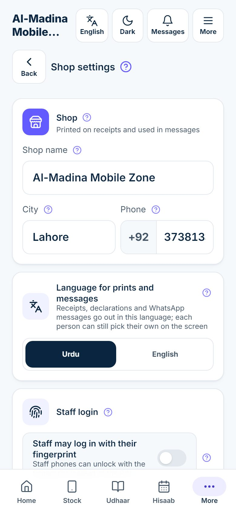
Picture 50: Shop settings
Shop: Shop name, City and Phone. Printed on receipts and used in messages.
Language for prints and messages: Urdu or English. Receipts, declarations and WhatsApp messages go out in this language. Each person can still choose their own screen language.
Staff login: Staff may log in with their fingerprint instead of the PIN.
Sales tax: switch on Charge sales tax, then set Tax rate %, Prices include tax, NTN and STRN. It is off by default and ticked on a bill when needed.
Receipt: the Invoice prefix (an example shows, such as INV-000123), the Receipt footer and Receipt footer (Urdu), for example "No return after 7 days".
Sticker cost code: a 10-letter code word so only you can read the buying price on a price sticker.
Price rules: who may sell under the asking price and who may change it.
Stock audit thresholds: where the stock-age bands end, what counts as high value and as a thin margin.
Item settings: stock valuation (weighted average or FIFO), whether selling past zero stock is allowed, and how many pieces are in a dozen, box or carton.
Device settings: whether used mobiles also need the lock check, and the grades you use for used units.
Barcode settings: the type of barcode for new stock. Old labels keep working.
When you change anything, a Save bar appears above the bottom tabs with "Not saved yet". Tap it and Saved confirms the change.
Business profile: logo and details on your bills
In the same Shop settings, the Logo & business details cards control how your printed bills look.
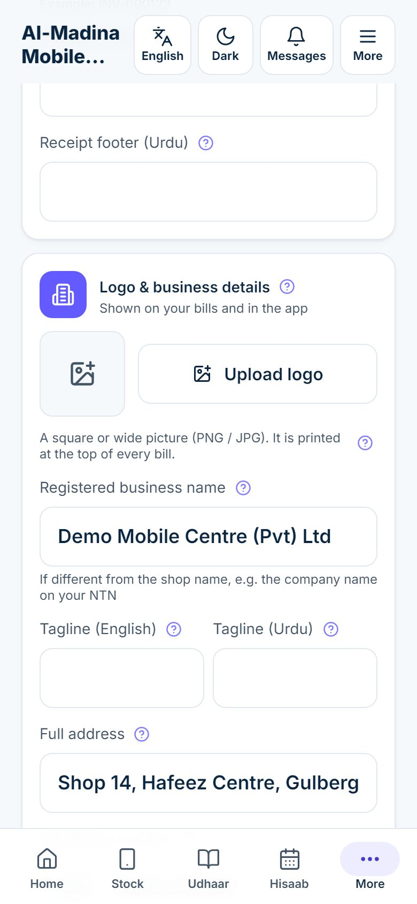
Picture 51: Logo and business details
Tap Upload logo and choose a square or wide picture (PNG or JPG). It is printed at the top of every bill. Change logo or Remove logo later if needed.
Fill Registered business name if it differs from the shop name (for example the company name on your NTN), the Tagline (English) and Tagline (Urdu), Full address, WhatsApp number, Email, Website / page, Business type, Province and Opening hours (for example "11 am – 10 pm, Friday closed").
Owner details: the owner's name and CNIC.
Tax registration (FBR): NTN, STRN and the FBR POS registration ID (only if you are in FBR's point-of-sale scheme). They are printed on bills when filled.
Currency: money is always Pakistani rupees, but you choose how it is written: the Sign (Rs., Rs, PKR and so on), Where the sign goes (Before (Rs. 500) or After (500 PKR)), and Rupees only or Always show paisa (.00). The Looks like preview shows the result.
Printed bill: tick what appears on sale bills and repair slips: Logo, Tagline, NTN / STRN / FBR POS ID, Owner's name, Bank / wallet details (for paying a balance), Terms (returns / warranty) and social pages. Write the Terms (English) and Terms (Urdu) and your bank and Easypaisa / JazzCash details here. QR code to see the bill online (on at the start) prints the QR described in chapter 8.
Tap Save on the Save bar.
WhatsApp messages and notifications
More → Notifications controls what the app sends and to whom.
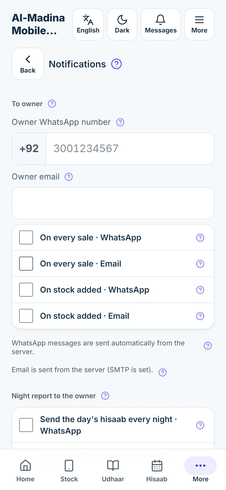
Picture 52: Notifications and the night report
To owner: the Owner WhatsApp number and Owner email. Tick On every sale and/or On stock added, by WhatsApp or email.
Night report to the owner: the day's hisaab every night (chapter 16).
Udhaar reminders: Remind customers automatically after the account has sat for a number of days. Installment and len-den reminders follow this switch too.
The screen tells you how messages are sent:
"WhatsApp messages are sent automatically from the server." means your software provider has set up the WhatsApp Business service; messages go by themselves.
Otherwise messages open in WhatsApp for you to send with one tap. They wait in Messages (the bell at the top of every screen) where you can open each and Mark sent.
"Email is sent from the server (SMTP is set)." means emails go by themselves. If email is not set up, ask your software provider; until then email messages wait in the list.
Messages to customers (receipts, reminders) use the shop's language from Language for prints and messages.
Language, theme and look
Language: tap the language button at the top of any screen and pick اردو, Roman Urdu or English. The app shows one language at a time; Urdu reads right to left. Numbers are always 0–9.
Dark / Light: tap Dark (or Light) at the top. More → Appearance also has System.
Look: More → Look gives four styles: Modern, Professional, Navy and Colorful.
Every screen has small ? buttons. Tap one for a short explanation with an example; each explanation has its own English / Urdu / Roman switch.
FBR Digital Invoicing (for shops registered for sales tax)
If FBR asks your business to report its invoices (sales-tax registered, notified by FBR), the app can send every sale bill to FBR by itself and print the FBR number and its QR code on the bill.
Make sure your NTN and STRN are filled in under Tax registration.
In IRIS (FBR's portal) get the Digital Invoicing security token (first the sandbox / test token).
Open More → Shop settings → FBR Digital Invoicing, paste the token, choose Sandbox (test) and tap Save.
Tap Test with FBR. When it says FBR accepted the test bill, turn on Send bills to FBR and Save.
After a few good bills, switch to Production (live) with the production token.
From then on, every sale goes to FBR right away. If the internet or FBR is down, the bill waits and goes by itself later. The bill page shows FBR number, Waiting, or FBR turned this bill down with the reason and a Send again button.
24. Bulk Excel import and export
When a shop moves from a register or another software, nobody wants to type 300 phones one by one. Bulk Excel lets you fill an Excel sheet and bring all rows in at once. Owner and manager only: More → Bulk Excel.
Picture 53: Bulk Excel: pick what to bring in
Import step by step
Example: you have 120 phones in the shop and 45 customers in your old udhaar register.
Pick what you are bringing in: Phones (stock), People, Accessories, Sales or Expenses. Start with People, then Phones (stock).
Tap Download the sheet. It opens in Excel with three sheets: Data (the only one you fill), Help (every column explained, required or not) and Lists (your brands, models, colours, suppliers and categories for the dropdowns).
The first three rows of Data are yellow sample rows, for example a Vivo Y21 128 GB at Rs. 35,000. Write your rows under them or over them. Samples are recognised and skipped, so nothing is ever created from a sample.
Fill it. Dates as dd-mm-yyyy, money in plain rupees (35,000 is fine), and words like condition, PTA or type from the dropdown. Typed words are understood too: New, Box pack, Used, PTA, Non-PTA, JV, Customer, Supplier, They owe us. A CSV file works as well.
Upload the file. Every row comes back marked ok, note (something will be created, like a new brand or a new person), error (with the reason in plain words, such as "IMEI must be 15 digits" or "Asking price is below cost") or skipped (a sample or an empty line). Nothing is saved yet.
Fix the errors in Excel and upload again, or tick Skip rows with errors, import the rest.
Tap Import. Either every good row is saved, or nothing is. The result tells you what was made (phones, purchase bills, people, opening balances and so on).
What each sheet does
Phones (stock): one row per phone. Leave the supplier blank for your own old stock. Give a supplier phone number and the rows become a purchase bill per supplier and date, with the paid amount against it and the rest on the supplier's khata. Non-PTA and JV phones need the SIM time.
People: name, phone and type are enough. An opening balance with who owes posts the start of the khata. A phone number already in your khata is skipped.
Accessories: name, quantity in hand, unit cost and sale price. The code (SKU) is made for you if left blank.
Sales: only phones already in stock in the app, by IMEI. If money stays on khata, the customer's phone number is needed. Selling under cost is refused unless the owner or manager allows it.
Expenses: date, category, amount and account (Cash unless you name a bank or wallet).
Every imported row goes through the same steps as the counter, so the khata, ledger and phone history are complete, exactly as if you had typed each one.
Export: download my data
Download my data on the same page gives your current phones, people, accessories, sales or expenses in exactly the same layout. You can correct things in Excel and bring the file back. Earlier imports are listed at the bottom with who did them and what they made.
25. Software fees, backup and the PC version
Your plan and paying the fee
Owner only: More → Software fees.
Your plan, the Monthly fee and Paid until.
Pay into one of these: the software provider's accounts (Easypaisa, JazzCash, SadaPay, bank), each with a Copy button for the number.
To pay:
Send the fee from your own Easypaisa, JazzCash or bank app.
In Software fees, fill I have paid: Amount (Rs), Months, Paid through, the Transaction ID / reference, and Add a screenshot.
Tap Send.
Your payments shows each payment as Being checked, Received or Not accepted (with the reason). Once it is received, your Paid until date moves forward, you see "Thank you! Your plan is renewed", and you can print the receipt.
Renewal code: sometimes, especially for the PC version without internet, the provider sends a code on WhatsApp. Paste it in Renewal code and tap Renew with code. It works without internet, but only once.
Fee still to pay
Sometimes the software provider extends your package before you pay (you agreed on the phone). Then Software fees shows Fee still to pay: each line has its number (for example FEE-0001), the period, the months and the fee, with Not paid, Part paid or Paid. Below it, Still to pay shows the total in red. If a day to pay was agreed, it shows To pay by with the date, or Was to be paid by once that day has passed.
Fee invoice opens the invoice to print or keep: each period, the fee, what you paid, what is left, and where to pay.
When you send money, it first clears the fee still to pay, oldest first; the rest moves your Paid until date forward. The amount in I have paid already includes what is still to pay.
In Your payments, a payment shows Went to earlier fee with the part that cleared it. The receipt shows it too.
The reminder window also shows "Fee still unpaid from before".
Example: the provider gave 2 months for Rs. 3,000 on the 9th, to pay by the 15th. You send Rs. 1,000: the line shows Part paid, Rs. 2,000 still to pay. Next you send Rs. 3,500: Rs. 2,000 clears the old fee (Paid) and Rs. 1,500 buys one more month.
Fee reminders
The app reminds you politely before the plan ends:
When
What you see
7 days left
A yellow bar at the top
3 days left
An orange bar, and a reminder window once a day
1 day left and the last day
A red bar, and the reminder window more often
Plan ended, grace days (normally 7)
A red bar: everything still works
After the grace days
View-only mode (see below)
Payment sent, not yet checked
A calm blue bar: "Payment received, verification pending."
The reminder window shows the plan, the end date, the fee, where to pay (with Copy buttons) and three buttons: Pay fee now, Remind me later (in 4 hours, tomorrow or in 3 days) and Close. It is the one screen that shows English, Urdu and Roman Urdu together. It never opens in the middle of a sale, a payment or any form. Staff see only a short line asking them to inform the owner.
What happens if the fee is not paid
Nothing is ever deleted. After the grace days the app goes into view-only mode:
You can still log in and see all your data.
You can still download every report and list, and take a backup.
You can still pay the fee.
New sales and purchases are paused until the fee is paid.
The moment the payment is approved (or a renewal code is pasted), everything opens again exactly as it was.
Backup my data
In Software fees (and in the reminder window) tap Backup my data. It downloads every list (stock, khata, sales, purchases, expenses, accessories and more) as Excel files in one zip. It works any time, even when the plan has ended.
Working without internet
If the market's internet drops, keep selling. A sale, purchase, payment or expense made without internet is saved on the phone, and the strip under the header says "Saved on this phone. It will be sent when the internet is back." When the connection returns, they are sent by themselves, in order, each only once. Bill numbers are given when they reach the server. Reports, downloads and WhatsApp sending need the internet.
The PC version (no internet needed)
Shops without reliable internet can run the same software on a Windows computer:
Install MobileShop-Setup.exe (your software provider gives it to you).
Open Mobile Shop from the Desktop. A small icon appears near the clock, and the app opens in the browser.
Create the shop account once, then work as usual.
Everything is stored on that computer. The small icon's menu has Backup now (a dated copy, also placed on the Desktop), Open data folder and Quit. Phones on the shop's Wi-Fi can also open it; ask your software provider to set this up. To update, run the new Setup; your data stays.
26. Common questions and troubleshooting
A customer says his balance is wrong. Open his page from the Udhaar khata and go through Khata history with him. Every line has a date, a bill number and the running balance. Send the PDF statement on WhatsApp.
I entered a payment twice. Open one of them and cancel it with a reason. The balance is corrected by a reversing entry, and the cancelled one stays visible, crossed out.
A friend borrowed money from me. Do I use Money received / Money paid? No. Use Gave money (len-den) and Took money (len-den) on his page (chapter 17). Money received and Money paid are for bills.
Left in hand is minus but I sold well today. You probably bought stock or gave back money on a return. Look at the chips under Went out. The money spent on stock is now phones on your shelf.
My galla count does not match Expected in drawer. Check whether an online payment was entered as Cash, or an expense was paid from the galla but not entered. Payments by Easypaisa or bank should always be Online.
Profit shows a loss this month. Open the Profit report. Look at Returned by customers and the expense lines. A large return or rent paid in this month can turn the month into a loss. The shop audit's Finance tab shows the same with the period before for comparison.
My salesman should not see profit. Give him the Salesman role (More → Staff → his name → Role). He can sell and take money but never sees buying prices, profit or reports.
I cannot find Expenses, Reports or the Shop audit. They are for the owner and manager. If you are the owner and still do not see a feature, it may be a module that is not in your plan; ask your software provider.
The WhatsApp reminder did not go by itself. Automatic sending needs the WhatsApp Business service set up by your software provider. Without it, open Messages (the bell) and tap each message to send it from WhatsApp.
The night report did not arrive. Check More → Notifications: the owner's number is written, Send the day's hisaab every night is ticked, and the time is set. Tap Send today's hisaab now to test.
The installment customer paid half. Open the plan, tap Take installment and change the amount to what he paid. The installment shows Part until the rest comes.
The Bulk Excel upload shows errors. Tap a red row to read the reason ("IMEI must be 15 digits", "Say who owes" and so on). Fix it in Excel and upload again, or tick Skip rows with errors, import the rest. Nothing is saved until you press Import.
My logo does not show on the bill. Check Shop settings → Printed bill: Logo must be ticked. Use a clear PNG or JPG, and tap Save on the Save bar.
The fee reminder keeps coming back. Pay the fee and tap I have paid with the transaction ID. The bar turns blue ("Payment received, verification pending") and the reminders stop.
My plan ended. Is my data gone? No. Nothing is ever deleted. You can view everything, download it and take a backup. New sales open again the moment the fee is received.
I forgot my password or PIN. PIN: tap Forgot PIN? Use password. Password: staff ask the shop owner (More → Staff → name → New password). The owner asks the software provider.
Print or download in the Android app opens Chrome. That is normal: Chrome shows the print screen or saves the file. If it says the link has expired, go back and tap Print or Download again.
The internet went off during a sale. Carry on. The sale is saved on the phone and sent when the internet returns. If one cannot be sent (for example the same phone was sold from another device), it shows in red with the reason; fix it and tap Try again.
Glossary
Word
Meaning
Udhaar
Credit: goods given now and paid later, or money you still owe someone.
Khata
A person's account page: everything sold, bought, paid and received, with the balance.
Len-den
Money given to or taken from a person with no bill, kept in their khata.
Qist
One monthly installment of a phone sold on installments.
Zamin
The guarantor who signs for an installment customer.
Amanat
A phone given on trust to another shop to show or sell; it stays yours until sold or returned.
Galla
The cash drawer at the counter.
Hisaab
The account of a day or a period: what came in, what went out, what is left.
Left in hand
Money that came in minus money that went out in the period. Not the same as profit.
Real profit
Profit on sales plus other income, minus expenses.
Owner drawing
Money the owner takes for himself; not a shop expense.
Close the day
Counting the galla at night and comparing it with what the app expects.
Asking price / Cost price
What you want to sell a phone for / what you paid for it.
IMEI
The 15-digit number of a phone (dial *#06#). Dual-SIM phones have IMEI 1 and IMEI 2.
CNIC
Pakistani national identity card number, 13 digits (12345-1234567-1).
PTA
Pakistan Telecommunication Authority. A PTA approved phone works with Pakistani SIMs.
Non-PTA
A phone not registered with PTA; a local SIM works only for a limited time (SIM time).
JV
A phone patched to get around PTA; it also has a SIM time and is higher risk.
Box pack / Open box / Used / Patched
The condition of a phone.
eGadget
The Punjab Police portal to check if a phone's IMEI is reported stolen.
NTN / STRN
National Tax Number and Sales Tax Registration Number from FBR.
FBR
Federal Board of Revenue, Pakistan's tax authority.
Grace days
The days after the plan ends when the app still works fully.
View-only mode
After the grace days: you can see, download and back up, but not make new bills.